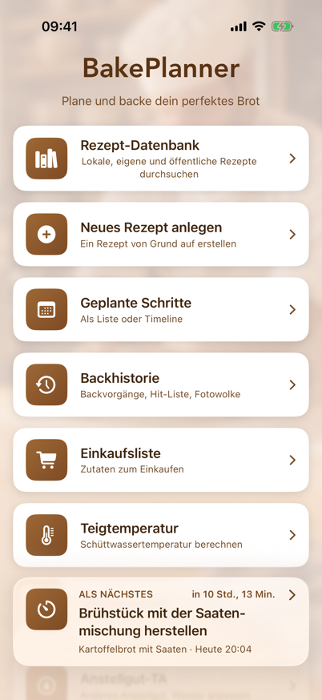
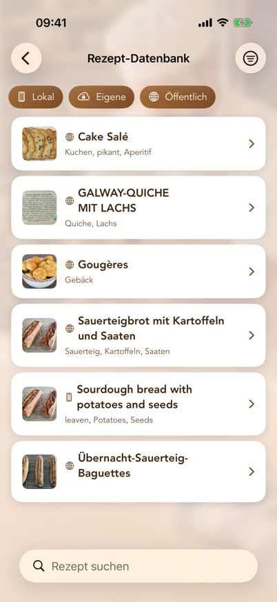
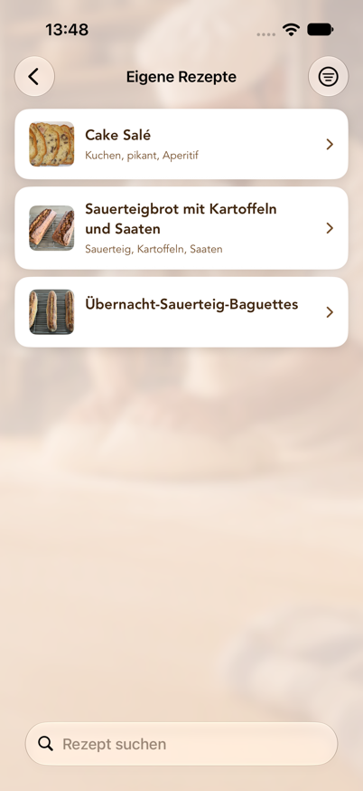
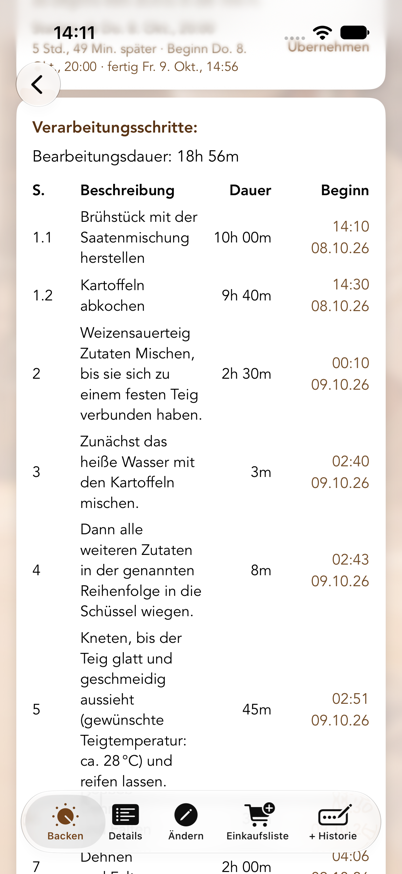
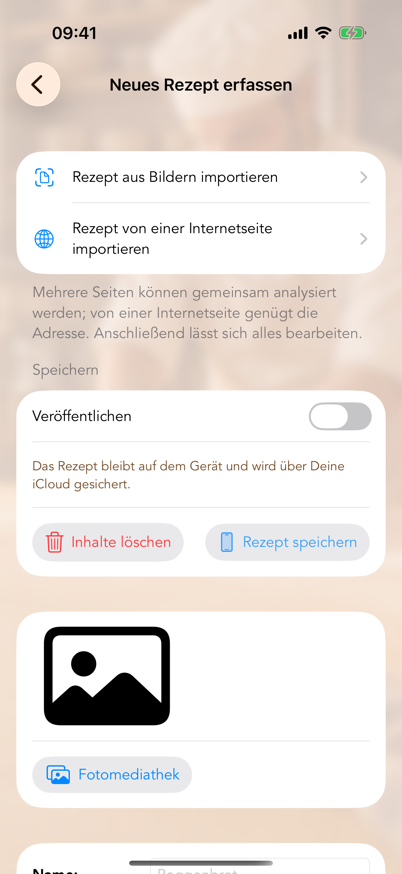
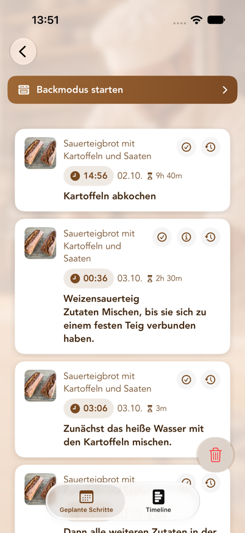
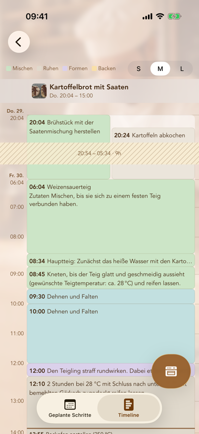
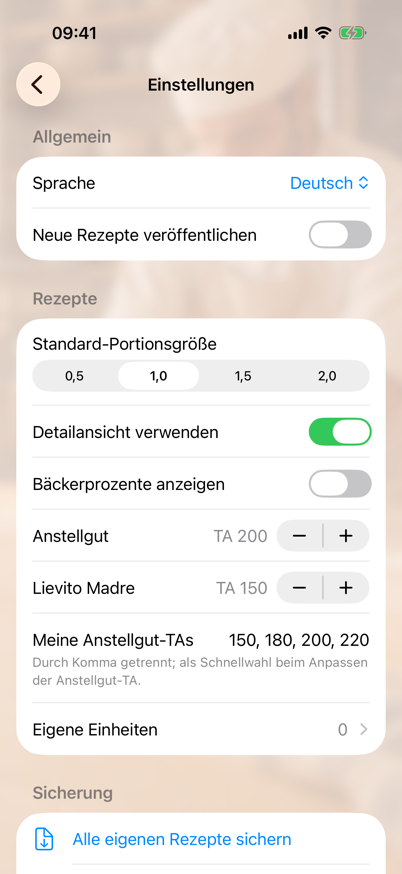

Inhalt
- Was BakePlanner macht
- Systemvoraussetzungen
- Grundbegriffe
- Das Hauptmenü
- Rezept-Datenbank
- Eigene Rezepte
- Backanleitung und Erinnerungen
- Neues Rezept anlegen
- Rezept bearbeiten
- Geplante Schritte (Liste und Timeline)
- Erinnerungen auf dem Sperrbildschirm
- Backhistorie
- Einkaufsliste
- Einstellungen
- Einheiten, Mengen und Portionsgrößen
- Datenschutz, Moderation und Nutzungsbedingungen
- Häufige Fragen und Fehlerbehebung
- Bekannte Einschränkungen
1. Was BakePlanner macht
BakePlanner ist eine Backplanungs-App für Brot, Brötchen und Gebäck. Sie unterscheidet sich von einer reinen Rezept-Sammlung dadurch, dass sie die Zeitplanung übernimmt:
- Ein Rezept besteht nicht nur aus Zutaten, sondern aus Verarbeitungsschritten mit Dauern.
- Aus diesen Dauern berechnet die App die Startzeit jedes einzelnen Schritts.
- Du kannst rückwärts planen: „Das Brot soll um 18:00 Uhr fertig sein“ – die App sagt Dir, wann Du den Sauerteig ansetzen musst.
- Für jeden Schritt wird eine lokale Erinnerung gesetzt, inklusive automatisch eingefügtem Schritt „Backofen anstellen“ und „Backvorgang ist beendet“.
Dazu kommen: eine gemeinsame öffentliche Rezept-Datenbank, eigene Rezepte auf dem Gerät, Zutaten-Import aus Fotos und von Internetseiten, Einkaufslisten nach Regalen sortiert, eine Backhistorie mit Fotos und Messwerten, ein Anstellgut-Tagebuch für Deine Sauerteige, drei Bäckerrechner (Teigtemperatur, Mehl ersetzen, Anstellgut-TA) eine On-Device-Übersetzung öffentlicher Rezepte mit einem Glossar der Bäckerbegriffe sowie Siri-Befehle für den nächsten Schritt und die Sauerteigfütterung (siehe Kapitel 11).
Schnellstart: In fünf Schritten zum ersten Backplan
- Öffne Rezept-Datenbank und wähle ein Rezept – oder lege unter Neues Rezept anlegen ein eigenes an.
- Öffne im Rezept den Tab Backen beziehungsweise Rezept backen.
- Wähle Starten ab oder Fertig bis und stelle Datum und Uhrzeit ein.
- Prüfe die berechneten Beginnzeiten und tippe auf Erinnerungen setzen.
- Öffne Geplante Schritte, um alle Termine als Liste oder Timeline zu kontrollieren.
Für Erinnerungen muss BakePlanner Mitteilungen senden dürfen. Die ausführlichen Erklärungen findest Du in Kapitel 7, Kapitel 10 und Kapitel 17.
2. Systemvoraussetzungen
| Punkt | Wert |
|---|---|
| Geräte | iPhone (auch iPhone Duo, zugeklappt und aufgeklappt) und iPad |
| Betriebssystem | iOS/iPadOS 26.0 oder neuer |
| Ausrichtung | iPhone: Hoch- und Querformat · iPad: alle Ausrichtungen |
| Sprachen | Deutsch, Englisch, Französisch (umschaltbar in den Einstellungen) |
| Darstellung | Hell- und Dunkelmodus, Dynamische Schriftgrößen |
| Internet | Für die öffentliche Rezept-Datenbank und die iCloud-Synchronisierung. Eigene Rezepte, Planung und Erinnerungen funktionieren auch vollständig offline; Änderungen werden später abgeglichen. |
| iCloud | Eigene Rezepte, geplante Schritte, Einkaufslisten und Backhistorien werden über iCloud zwischen allen Geräten mit demselben Apple-Account synchronisiert, sofern iCloud aktiviert ist. Die Erinnerungen selbst sind pro Gerät lokal. |
| Berechtigungen | Mitteilungen (für Erinnerungen), Fotomediathek und Kamera (für Rezeptbilder) |
| Anmeldung | Für das Backen, die eigenen Rezepte und die öffentliche Datenbank nicht nötig. Freiwillig ist die Anmeldung mit Apple: Mit ihr gilt die Autorschaft Deiner veröffentlichten Rezepte auf allen Deinen Geräten (siehe Kapitel 14). |
Die App fragt die Erlaubnis für Mitteilungen beim ersten Start ab. Ohne diese Erlaubnis werden Backschritte weiterhin berechnet und in der Liste „Geplante Schritte“ angezeigt, es erscheinen aber keine Erinnerungen.
3. Grundbegriffe
Diese sechs Begriffe tauchen überall in der App auf:
Rezept
Die oberste Einheit: Name, Beschreibung, Bild, Bewertung, Tags, optionaler Link zur Quelle, Gesamtgewicht und Bearbeitungsdauer.
Komponente
Ein Teilansatz innerhalb eines Rezepts – zum Beispiel „Sauerteig“, „Vorteig“, „Hauptteig“, „Brühstück“. Jede Komponente hat eine Nummer (Sortierreihenfolge) und ihre eigene Zutatenliste. Das ist der Kern des Datenmodells: BakePlanner ist für mehrstufige Teigführungen gebaut.
Zutat
Gehört immer zu einer Komponente. Besteht aus Nummer, Menge, Einheit, Name und optional einem Bruch (Zähler/Nenner, in der App als Z / N bezeichnet).
Verarbeitungsschritt
Eine Arbeitsanweisung mit Schrittnummer und Dauer. Gespeichert wird die Dauer in Minuten; eingeben kannst Du sie auch in Stunden und Minuten („1:30“, „1h 30“, „1,5 h“), siehe Kapitel 8. Die Schrittnummer ist eine Dezimalzahl und hat eine besondere Bedeutung:
- Ganze Zahlen (1, 2, 3 …) sind Hauptschritte. Sie laufen zeitlich nacheinander.
- Nachkommastellen (2.1, 2.2, 2.3) sind Parallelschritte innerhalb eines Hauptschritts. Sie laufen gleichzeitig; für die Gesamtdauer zählt nur die längste Dauer der Gruppe. Schritte, die eine Komponente herstellen (Sauerteig, Vorteig, Quellstück …), starten dabei im Abstand von 5 Minuten nacheinander, in der Reihenfolge ihrer Schrittnummern: Niemand wiegt vier Vorstufen zur selben Minute ab, und die Erinnerungen kommen entsprechend versetzt. Alle anderen Parallelschritte enden gemeinsam mit ihrer Gruppe.
Beispiel: Wenn Du Sauerteig (12 h) und Brühstück (2 h) gleichzeitig ansetzt, gib beiden Schritt 1.1 und 1.2. Der nächste Hauptschritt 2 beginnt nach gut 12 Stunden, nicht nach 14.
Portionsgröße
Ein Skalierungsfaktor für alle Mengen: 0,5 / 1,0 / 1,5 / 2,0. 1,0 entspricht dem Rezept, wie es gespeichert ist. 2,0 verdoppelt alle Mengen und das angezeigte Gesamtgewicht. Statt eines Faktors kannst Du ein Teiggewicht in Gramm eingeben. Die Wahl gilt für alle Tabs des geöffneten Rezepts: Details, Backen und Einkaufsliste rechnen mit demselben Faktor (siehe Kapitel 15).
Ablage
Wo ein Rezept liegt. Es gibt zwei Möglichkeiten, und der Schalter Veröffentlichen beim Speichern entscheidet, wer das Rezept sehen kann:
| Ablage | Wer sieht es? | Wo liegt es? | Änderbar? |
|---|---|---|---|
| Nur auf dem Gerät (Schalter aus) | nur Du | auf dem Gerät, gesichert über Deine iCloud | ja, jederzeit |
| Öffentlich für alle (Schalter an) | alle Nutzer der App | in der Rezept-Datenbank | ja, durch Dich als Autor |
Ein Rezept, das Du nicht veröffentlichen darfst – etwa aus einem Buch –, bleibt auf dem Gerät. Über iCloud ist es trotzdem auf allen Deinen Geräten vorhanden, und mit der Sicherung (siehe Kapitel 14) lässt es sich als Datei exportieren.
4. Das Hauptmenü
Nach dem Start erscheint das Hauptmenü mit neun Karten:

| Karte | Zweck |
|---|---|
| Rezept-Datenbank | Alle Rezepte in einer Liste: Deine eigenen auf dem Gerät, die von Dir veröffentlichten und die öffentlichen aller Nutzer – mit Filter-Chips Lokal / Von mir veröffentlicht / Öffentlich |
| Neues Rezept anlegen | Rezept von Grund auf erstellen oder aus Fotos bzw. von einer Internetseite importieren |
| Geplante Schritte | Alle terminierten Backschritte als Liste oder Timeline |
| Backhistorie | Vergangene Backvorgänge mit Kommentaren und Fotos – als Liste, Galerie, Hit-Liste oder Fotowolke |
| Einkaufsliste | Alle angelegten Einkaufslisten |
| Teigtemperatur | Rechner: Schüttwassertemperatur für eine gewünschte Teigtemperatur |
| Mehl ersetzen | Rechner: Mehlsorte tauschen, Wasser anpassen |
| Anstellgut-TA | Rechner: Anstellgut mit anderer Teigausbeute einsetzen, Wasser anpassen |
| Einstellungen | Sprache, Standardwerte, Backplanung, Sicherung, Konto |
Die Leiste „Als Nächstes“. Sobald ein Backplan läuft, schwebt am unteren Bildschirmrand eine Leiste mit dem Schritt, der als Nächstes ansteht: Schritttext, Rezeptname, Uhrzeit und ein Countdown in Minuten („in 42 Min.“). Die Menükarten scrollen darunter hindurch, die Leiste bleibt immer im Blick. Ist die Zeit eines Schritts gekommen, wechselt sie für eine Stunde auf „Jetzt fällig“ mit der verstrichenen Zeit („seit 5 Min.“) – so lange, bis Du den Schritt in der Mitteilung als erledigt markierst oder der nächste Schritt fällig wird. Ein Tippen auf die Leiste öffnet „Geplante Schritte“. Ohne anstehenden Schritt bleibt sie verborgen, und das Menü sieht aus wie oben abgebildet.
Mit dem Zurück-Pfeil oben links kommst Du aus jedem Bereich wieder ins Hauptmenü.
5. Rezept-Datenbank
Die Rezept-Datenbank ist seit Version 2.0 eine Liste für alle Rezepte: die öffentlichen, die Du oder andere Nutzer geteilt haben, und Deine eigenen Rezepte auf dem Gerät (siehe Kapitel 6). Alphabetisch sortiert, mit drei Filter-Chips unter dem Suchfeld – Lokal, Von mir veröffentlicht, Öffentlich –, die sich einzeln ein- und ausschalten lassen und ihre Stellung behalten.
Vor jedem Namen steht ein Symbol für die Quelle: ein iPhone für Rezepte auf dem Gerät, ein Personen-Symbol für die von Dir veröffentlichten und ein Globus für die öffentlichen Rezepte der anderen Nutzer. Schaltest Du Öffentlich aus, bleibt neben Deinen lokalen Rezepten die Liste dessen, was Du selbst veröffentlicht hast.

Suchen und filtern
- Suchfeld oben: durchsucht Rezeptnamen.
- Suchbereich umschalten: Unter dem Suchfeld kannst Du zwischen Name und Tags wählen. Bei „Tags“ wird in den Schlagworten gesucht (z. B. „Roggen“, „Vollkorn“, „Sauerteig“).
- Filter-Chips unter dem Suchfeld: Lokal (Rezepte auf dem Gerät), Von mir veröffentlicht (Deine eigenen Rezepte in der Datenbank) und Öffentlich (die Rezepte der anderen Nutzer). Jeder Chip schaltet seine Quelle einzeln ein oder aus; ein öffentliches Rezept gehört immer genau zu einem der beiden Cloud-Chips.
- Filter-Symbol oben rechts: Mindestbewertung (Alle Bewertungen, 1–5 Sterne und mehr). Ist der Filter aktiv, wird das Symbol gefüllt dargestellt.
- Nach unten ziehen aktualisiert die Liste aus der Cloud.
Steht „Keine Rezepte geladen“, bestand beim Start keine Internetverbindung – zieh die Liste einmal nach unten. Steht dort „Keine passenden Rezepte“, ist ein Filter aktiv.
Ein öffentliches Rezept öffnen
Ein Rezept öffnet sich im Tab Details. Am unteren Rand stehen drei Tabs:
- Rezept backen – die Backanleitung mit Zeitplanung (siehe Kapitel 7). Die Zeitplanung wird erst berechnet, wenn Du diesen Tab wählst.
- Details – Übersicht über Zutaten, Komponenten und Schritte
- Einkaufsliste – die Zutaten auf eine Einkaufsliste setzen
Rezept übersetzen
Standardmäßig übersetzt BakePlanner öffentliche Rezepte automatisch in Deine App-Sprache – vollständig auf dem Gerät (Apple Übersetzung) – und das betrifft Rezeptname, Beschreibung, Tags, Komponenten-, Zutatennamen und Schritttexte. Unter Einstellungen → Übersetzung → Öffentliche Rezepte automatisch übersetzen lässt sich das abschalten (siehe Kapitel 14).
- Eingeschaltet (Standard): Die Rezept-Datenbank übersetzt Namen, Beschreibungen und Tags fremdsprachiger Rezepte bereits im Hintergrund, und beim Öffnen eines Rezepts übersetzt die App automatisch den Rest – Komponenten, Zutaten und Schritte –, falls dafür noch keine Übersetzung vorliegt. Liegt eine vor, erscheint sie sofort. Steht die App auf Deutsch, bleibt ein deutsches Rezept natürlich unverändert. Weil die Sprache damit schon feststeht, entfällt in diesem Modus das Globus-Symbol.
- Ausgeschaltet: Ein Rezept zeigt zunächst immer die Sprache, in der es geschrieben wurde. Oben rechts erscheint stattdessen das Globus-Symbol, über das Du selbst zwischen Deutsch, English und Français wählst. Ein Haken im Menü zeigt, welche Sprache gerade angezeigt wird; wähle sie erneut, um ohne Umweg zum Original zurückzukommen.
Hinweise:
- Einheiten übersetzt die Rezeptübersetzung nicht. Die App zeigt sie ohnehin in der eingestellten Sprache an (siehe Kapitel 15).
- Die erste Übersetzung einer Sprache dauert einen Moment (bei automatischer Übersetzung eine kurze Verzögerung, bei manueller eine Fortschrittsanzeige statt Globus). Danach ist sie zwischengespeichert und sofort verfügbar.
- Beim ersten Mal fragt iOS gegebenenfalls, ob die Sprachpakete für die Übersetzung geladen werden dürfen. Lehnst Du ab, bleiben Rezepte in ihrer Originalsprache; bei ausgeschalteter automatischer Übersetzung lässt sich das später über das Globus-Symbol nachholen.
- Bäckerbegriffe übersetzt ein Glossar. Wörter wie Brühstück, Quellstück, Kochstück, Anstellgut, Stockgare oder Stückgare – auch in Zusammensetzungen wie Weizenanstellgut oder Roggensauerteig – gehen nicht durch die maschinelle Übersetzung, sondern werden mit dem Fachwort der Zielsprache eingesetzt (scald, soaker, sourdough starter, bulk fermentation …). Eine ältere Übersetzung, in der ein solches Wort noch falsch stand, übersetzt die App beim Öffnen neu.
- Das Original wird nie überschrieben. Als Original gilt die Sprache, in der das Rezept geschrieben ist – nicht die Sprache, auf die Deine App eingestellt war. Die App liest das am Rezepttext ab, sodass ein französisches Rezept auch dann als französisches Original geführt wird, wenn es jemand in einer deutschsprachigen App eingegeben hat.
Ein Rezept übernehmen
Im Tab Rezept backen gibt es die Schaltfläche „Als eigenes Rezept speichern“. Damit landet eine vollständige Kopie – samt Bild, Komponenten, Zutaten und Schritten – in „Eigene Rezepte“. Erst diese Kopie kannst Du bearbeiten.
Die App bestätigt das mit „Rezept wurde gespeichert“ und dem Hinweis, dass Du die Kopie bearbeiten kannst, ohne das öffentliche Rezept zu verändern. Schlägt das Speichern fehl, erscheint stattdessen eine Fehlermeldung – ein stilles Verschwinden gibt es nicht.
Ein eigenes Rezept bearbeiten
Rezepte, die von Deinem Konto stammen, kannst Du direkt in der Rezept-Datenbank ändern: Menü „…“ oben rechts → „Rezept bearbeiten“. Das Formular entspricht dem Erfassen eines Rezepts: Bild, Name, Beschreibung, Link, Tags, Komponenten mit Zutaten und Verarbeitungsschritte. Komponenten, Zutaten, Tags und Schritte lassen sich hinzufügen und löschen. Speichern schreibt die Änderungen in die Datenbank, Abbrechen verwirft sie; bis dahin bleibt das angezeigte Rezept unverändert.
Dabei gilt:
- Bearbeitet wird immer das Original in der Sprache, in der das Rezept geschrieben ist – auch wenn Du es gerade übersetzt ansiehst. Vorhandene Übersetzungen werden verworfen und beim nächsten Sprachwechsel neu erstellt.
- Startzeiten, Gesamtdauer und Gesamtgewicht berechnet die App beim Speichern neu.
- Ein neues Bild ersetzt das alte in der Datenbank.
- Die Fassung in „Eigene Rezepte“ auf dem Gerät ist davon nicht betroffen; sie bleibt ein eigenes Rezept.
Bei Rezepten anderer Autoren erscheint der Eintrag nicht – außer für Administratoren (siehe unten).
Melden, blockieren, löschen
Über das Menü „…“ oben rechts:
- Rezept melden – Du wählst einen Grund (anstößig/beleidigend, Spam, Urheberrechtsverletzung, Sonstiges). Die Meldung geht zur Prüfung an den Betreiber, und das Rezept wird sofort für alle Nutzer ausgeblendet, nicht erst nach der Prüfung. Sichtbar wird es nur wieder, wenn ein Administrator es freigibt.
- Autor blockieren – alle Rezepte dieses Autors verschwinden aus Deiner Liste. Das wirkt nur auf Deinem Gerät; andere Nutzer sehen sie weiter.
- Rezept bearbeiten – erscheint nur bei Rezepten, die von Deinem Konto stammen (siehe oben).
- Mein Rezept löschen – erscheint ebenfalls nur bei Deinen eigenen Rezepten. Das Rezept wird endgültig aus der Datenbank entfernt.
Die beiden unterscheiden sich also in der Reichweite: Blockieren wirkt lokal, Melden wirkt für alle. Beides lässt sich zurücknehmen – unter Einstellungen → Moderation (siehe Kapitel 14).
Administrator-Funktion
Bist Du als Administrator angemeldet (siehe Kapitel 14), kannst Du jedes öffentliche Rezept entfernen – gedacht für die Moderation gemeldeter Inhalte. Dafür gibt es drei Wege: den Eintrag „Rezept löschen (Admin)“ im ⋯-Menü des Rezepts, die gleichnamige Schaltfläche unten im Tab Details, und in der Rezept-Datenbank ein Wischen nach links über die Zeile. Jeder Weg fragt vor dem Löschen nach; in der Liste nennt die Rückfrage den Rezeptnamen. Mit dem Rezept verschwindet auch sein Bild aus dem Speicher. Über „Rezept bearbeiten“ im selben Menü kannst Du ein öffentliches Rezept auch korrigieren – etwa einen Tippfehler oder eine falsche Mengenangabe –, ohne es zu löschen. Auf die Rezepte, die andere Nutzer auf ihren Geräten haben, hat ein Administrator keinen Zugriff; sie sind nicht geteilt und damit auch kein Fall für die Moderation.
Gemeldete Rezepte bleiben für Administratoren in der Liste sichtbar, während sie für alle anderen ausgeblendet sind. Unten im Tab Details steht dann „Dieses Rezept wurde gemeldet und ist für alle anderen Nutzer ausgeblendet.“ Ist die Meldung berechtigt, löschst Du das Rezept. Ist sie es nicht, macht „Rezept wieder freigeben“ es sofort wieder für alle sichtbar.
6. Eigene Rezepte
Eigene Rezepte sind die Rezepte auf Deinem Gerät: selbst angelegte, importierte und aus der Datenbank übernommene. Du findest sie unter Hauptmenü → Rezept-Datenbank mit dem Filter-Chip Lokal (siehe Kapitel 5); schaltest Du die Chips Von mir veröffentlicht und Öffentlich aus, bleibt die reine Liste Deiner eigenen Rezepte.

Wo nur eigene Rezepte infrage kommen – in den leeren Ansichten von Einkaufsliste und Backhistorie –, öffnet Eigene Rezepte öffnen eine Liste nur dieser Rezepte. Solange sie leer ist, bietet sie die zwei Wege zum ersten Rezept direkt an: Rezept-Datenbank öffnen und Neues Rezept anlegen.
Suchen und filtern
- Suchfeld mit Umschaltung Name / Tags.
- Filter-Symbol oben rechts: Mindestbewertung wählen (Alle Bewertungen, 1–5 Sterne und mehr). Ist ein Filter aktiv, wird das Symbol gefüllt dargestellt.
Die Suche ignoriert Groß- und Kleinschreibung und findet auch Wortteile: „roggen“ findet „Roggenbrot“, und bei Tags genügt ein Teil des Schlagworts. Such- und Bewertungsfilter lassen sich kombinieren.
Rezept löschen
Zeile nach links wischen → Löschen. Es folgt eine Sicherheitsabfrage mit dem Rezeptnamen, damit ein versehentliches Wischen kein Rezept vernichtet. Mit dem Rezept werden auch seine Komponenten, Zutaten, Verarbeitungsschritte und Backhistorien-Einträge gelöscht.
Bereits geplante Schritte dieses Rezepts bleiben allerdings in „Geplante Schritte“ stehen – lösche sie dort separat, wenn Du sie nicht mehr brauchst.
Die Tabs eines eigenen Rezepts
| Tab | Inhalt |
|---|---|
| Backen | Backanleitung mit Zeitplanung und „Erinnerungen setzen“ |
| Details | Bewertung, Beschreibung, Gesamtzutaten, Komponenten, Schrittübersicht, Rezept teilen als PDF, Rezept exportieren als Datei; Mehl- und Anstellgut-Zeilen sind antippbar (siehe Kapitel 15) |
| Ändern | Rezept bearbeiten (siehe Kapitel 9) |
| Einkaufsliste | Zutaten dieses Rezepts – in der gewählten Portionsgröße – auf eine Einkaufsliste setzen (siehe Kapitel 13) |
| + Historie | Einen Backvorgang mit Datum, Kommentar, Fotos und Messwerten (Raum- und Teigtemperatur, Gare, Mehl, Krume) nachtragen |
| Fütterung | Nur bei Anstellgut-Rezepten: das Anstellgut-Tagebuch (siehe Kapitel 9) |
Portionsgröße und Teiggewicht sind in allen Tabs dieselben: Was Du unter Details einstellst, gilt auch unter Backen und für die Einkaufsliste.
Ein Rezept öffnet sich im Tab Details. Die Zeitplanung im Tab Backen wird erst berechnet, wenn Du ihn wählst; nur Neu planen in „Geplante Schritte“ führt direkt dorthin.
Im Tab Details kannst Du das Rezeptbild antippen, um es groß anzuzeigen.
7. Backanleitung und Erinnerungen
Das ist der Kern der App. Der Aufbau ist bei eigenen und öffentlichen Rezepten gleich.

Von oben nach unten
- Bild und Name – Bild antippen zeigt es groß.
- Portionsgröße (0,5 / 1,0 / 1,5 / 2,0) oder Teiggewicht, das daraus berechnete Gesamtgewicht in Gramm, – falls hinterlegt – der Link zum Rezept und Rezept teilen: Letzteres erzeugt ein PDF mit Bild, Komponenten samt Zutaten, Gesamtzutaten und Verarbeitungsschritten in der gerade gewählten Portionsgröße und bietet es im Teilen-Blatt an, zum Beispiel für Nachrichten, Mail, Drucken oder „In Dateien sichern“. Das gibt es ebenso bei den eigenen Rezepten im Tab „Details“. Darunter steht „TA 172 · Hydration 72 %“, die Teigausbeute und Hydration über alle Komponenten; ein Tipp öffnet die Aufschlüsselung (siehe Kapitel 15).
- Gesamtzutaten – alle Zutaten über alle Komponenten hinweg zusammengefasst. Diese Liste ist zum Einkaufen und Abwiegen gedacht. Wasser wird bewusst weggelassen, ebenso Zutaten, die selbst ein Zwischenprodukt einer Komponente sind (z. B. „Sauerteig“ als Zutat des Hauptteigs) – sonst würden Mengen doppelt zählen.
- Komponenten – nach Nummer sortiert, jede mit ihren Zutaten in der gewählten Portionsgröße.
- Letztes Mal (nur eigene Rezepte, erst nach dem ersten Backen) – wie der letzte Backvorgang dieses Rezepts lief: Raum- und Teigtemperatur, tatsächliche Stock- und Stückgare, Mehl, Krume/Ofentrieb und Kommentar aus der Backhistorie, mit Datum. Ergänzen öffnet den Eintrag zum Nachtragen; ist noch nichts notiert, fragt die Karte danach und bietet Jetzt eintragen an. Gezählt wird nur ein Backvorgang, der schon stattgefunden hat – der beim Setzen der Erinnerungen angelegte Eintrag liegt bis zum Backende in der Zukunft.
- Steuerleiste – siehe unten.
- Verarbeitungsschritte – Tabelle mit Schritt, Beschreibung, Dauer und berechnetem Beginn. Als letzte Zeile erscheint „Fertig“ mit dem Endzeitpunkt.
- Bisherige Backvorgänge (nur eigene Rezepte) – alle Backhistorien-Einträge, neueste zuerst, je mit Datum, den Messwerten in einer Zeile und dem Kommentar; ein Eintrag in der Zukunft ist als „geplant“ markiert.
- Erinnerungen setzen.
Die Steuerleiste
| Element | Funktion |
|---|---|
| Dauer ändern | Schalter. Aktiv erscheint pro Schritt ein Eingabefeld „Dauer“. |
| Starten ab / Fertig bis | Legt fest, wie das Datum unten interpretiert wird. Auf dem iPhone im Hochformat abgekürzt als Ab / Bis. |
| Datum und Uhrzeit | Der Bezugszeitpunkt der Planung, wählbar von heute bis ein Jahr im Voraus. |
Starten ab bedeutet: Ich fange zu diesem Zeitpunkt an – wann bin ich fertig?
Fertig bis bedeutet: Ich will zu diesem Zeitpunkt fertig sein – wann muss ich anfangen? Die Spalte „Beginn“ rechnet dann rückwärts.
Ändere den Zeitpunkt und beobachte, wie sich die Spalte „Beginn“ sofort anpasst. Es wird noch nichts gespeichert.
Dauern anpassen
- Dauer ändern einschalten.
- In den Feldern der rechten Spalte neue Dauern eintragen – in Minuten („90“) oder in Stunden und Minuten („1:30“, „1h 30“, „1,5 h“, „14 Std“). Leere Felder und Werte ≤ 0 werden ignoriert, der bisherige Wert bleibt.
- Dauer übernehmen tippen.
Die App berechnet daraufhin alle Startzeiten und die Gesamt-Bearbeitungsdauer neu. Bei eigenen Rezepten werden die neuen Dauern dauerhaft gespeichert; bei öffentlichen Rezepten gelten sie nur für die aktuelle Planung.
Was die App am Plan bemängelt
Über der Schritttabelle erscheinen Hinweise, sobald der eingestellte Zeitpunkt zu einem unpraktischen Plan führt. Sie aktualisieren sich mit jeder Änderung an Datum, Uhrzeit oder Dauern – noch bevor Du „Erinnerungen setzen“ tippst.
| Zeichen | Bedeutung |
|---|---|
| ⚠️ orange | Hinweis. Der Plan funktioniert, aber Du solltest ihn kennen. |
| ⛔️ rot | Fehler. Es würden mehr Backvorgänge gleichzeitig laufen, als Du Backöfen hast. Beim Setzen der Erinnerungen fragt die App dann nach; Trotzdem planen setzt den Plan dennoch – etwa wenn mehrere Teige bei derselben Temperatur zusammen in den Ofen passen. |
Geprüft wird dreierlei:
- Schritte außerhalb Deines Tages. Liegt ein Schritt vor dem Tagesbeginn oder nach dem Tagesende aus den Einstellungen, wird er benannt: „‚Dehnen und Falten‘ beginnt am 11.09.26, 03:07 und damit vor dem Tagesbeginn (06:00 Uhr).“ Bei langen Teigführungen ist das normal und kein Grund zur Sorge – es zeigt Dir nur, wofür Du nachts aufstehen müsstest.
- Überschneidende Backzeiten. Jeder Ofen nimmt einen Backvorgang auf einmal. Mit einem Backofen (Standard) ist jede Überschneidung mit einem anderen geplanten Rezept ein Fehler: Zwei Brote passen nicht gleichzeitig bei zwei verschiedenen Temperaturen hinein. Hast Du in den Einstellungen mehrere Backöfen eingetragen, dürfen entsprechend viele Backvorgänge parallel laufen. Eine Überschneidung, die noch in einen freien Ofen passt, wird dann nur als Hinweis gemeldet („… und braucht deshalb einen weiteren Backofen“); erst der Backvorgang, für den kein Ofen mehr frei ist, ist ein Fehler.
- Zu kurze Backpause. Liegt zwischen zwei Backvorgängen im selben Ofen weniger Zeit als die eingestellte Backpause, kommt ein Hinweis. Der Ofen braucht die Zeit zum Umheizen. Mit mehreren Backöfen entfällt der Hinweis, solange ein anderer Ofen in dieser Zeit frei ist – das Brot kommt dann einfach in den kalten.
Die Hinweise verhindern nichts – Du kannst den Plan trotzdem setzen. Sie ersparen Dir nur die Überraschung um drei Uhr morgens.
Vorschläge gegen die Nacht. Beginnt ein Schritt vor dem Tagesbeginn oder nach dem Tagesende, sucht die App den nächstfrüheren und den nächstspäteren Zeitpunkt, zu dem alle Schritte in Deinen Tag fallen, und zeigt sie unter den Hinweisen an, zum Beispiel:
Fertig bis Sa., 10.10., 13:45
1 Std., 45 Min. später · Beginn Fr., 9.10., 18:05 · fertig Sa., 10.10., 13:45
Übernehmen stellt Datum und Uhrzeit oben entsprechend ein; das Rezept bleibt, wie es ist. Gesucht wird in Viertelstunden-Schritten bis zu einem Tag früher oder später, nie vor jetzt und nie so, dass der Backvorgang mehr Backöfen bräuchte, als Du hast. Gibt es keinen solchen Zeitpunkt – etwa weil die Teigführung länger dauert als Dein Tag –, sagt die App das.
Erinnerungen setzen
Ein Tippen auf Erinnerungen setzen löst mehrere Dinge gleichzeitig aus:
- Für jeden Verarbeitungsschritt wird eine lokale Erinnerung zur berechneten Startzeit gesetzt.
- Zusätzlich wird automatisch der Schritt „Backofen anstellen“ eingefügt – um die eingestellte Vorheizzeit vor dem Backschritt (Standard 15 Minuten, änderbar in den Einstellungen). Backschritt ist der Schritt, der das Backen beschreibt, nicht unbedingt der letzte: Folgt noch „Auskühlen lassen“, wird trotzdem vor dem Backen vorgeheizt.
- Nennt das Rezept eine Ofentemperatur, steht sie dabei, etwa „Backofen anstellen (250 °C)“. Bei „Bei 250 °C fallend auf 220 °C backen“ ist es die erste. Die Temperatur darf auch im Schritt davor stehen („Brot einschießen, Ofen 250 °C“).
- Hat das Rezept schon einen eigenen Schritt zum Vorheizen, fügt die App keinen zweiten ein. Der eigene Schritt erinnert dann an das Vorheizen und bekommt die Temperatur angehängt, wenn sie dort noch fehlt.
- Beginnt das Backen im kalten Ofen („in den kalten Backofen schieben“), entfällt die Vorheizzeit.
- Nennt der Backschritt eine fallende Temperatur („bei 250 °C einschießen, nach 10 Minuten auf 220 °C reduzieren“), fügt die App zusätzlich „Backofen auf 220 °C zurückdrehen“ ein – zu der Minute, die der Satz mit der niedrigeren Temperatur nennt; „sofort“ heißt zum Backbeginn, ohne Angabe sind es zehn Minuten nach Backbeginn. Erwähnt der Schritt Dampf oder Schwaden, heißt es „…, Dampf ablassen“; bei „ohne Dampf“ nicht. Hat das Rezept einen eigenen Schritt zum Dampfablassen („Dampf ablassen“ 20 Minuten nach dem Einschießen), wird der Ofen zum Backbeginn zurückgedreht und der eingefügte Schritt nennt keinen Dampf – wann der Dampf abgelassen wird, sagt das Rezept selbst. Eine daneben genannte Umluft-Temperatur („230 °C Ober-/Unterhitze, Umluft 210 °C“) zählt nicht als Absenkung.
- Ebenso wird „Backvorgang ist beendet“ zum Endzeitpunkt eingeplant.
- Alle Schritte landen in „Geplante Schritte“.
- Bei eigenen Rezepten wird ein Backhistorien-Eintrag mit dem Enddatum und dem Platzhalter-Kommentar „kein Kommentar erfasst“ angelegt, den Du später ergänzen kannst.
Anschließend erscheint eine Bestätigung, zum Beispiel:
Erinnerungen wurden gesetzt
12 Erinnerungen gesetzt.
Backofen anstellen um 16:45 Uhr (250 °C).
Fertig um 18:10 Uhr.
Die Texte „Backofen anstellen“, „Backofen zurückdrehen“ und „Backvorgang ist beendet“ erscheinen in der gerade aktiven Sprache (bei öffentlichen Rezepten in der Sprache, in der Du das Rezept ansiehst).
Ein Rezept, ein Plan – oder mehrere. Tippst Du auf „Erinnerungen setzen“, während für dieses Rezept schon ein Plan läuft, fragt die App: Bestehenden Plan ersetzen verwirft die alten Schritte samt Erinnerungen und setzt den neuen Plan an ihre Stelle – das ist der Weg, wenn Du das Brot auf einen anderen Tag verschieben willst. Zusätzlich planen behält den bestehenden Plan und legt den neuen daneben, etwa für Samstag und Sonntag. In „Geplante Schritte“ bekommt dann jeder Plan einen eigenen Filter-Chip mit seinem Startzeitpunkt, und „Verschieben“ sowie „Löschen“ wirken immer nur auf den gewählten Plan.
Für die Apple Watch: setze die Erinnerungen auf dem iPhone. Die Erinnerungen werden auf dem Gerät erzeugt, auf dem Du „Erinnerungen setzen“ tippst, und bleiben auch dort. Nur ein iPhone gibt seine Mitteilungen an eine gekoppelte Apple Watch weiter – ein iPad ist mit der Uhr nicht gekoppelt und kann das nicht. Planst Du also auf dem iPad, erscheinen die Backhinweise ausschließlich auf dem iPad, selbst wenn Du eine Apple Watch trägst.
Ein bereits gesetzter Plan lässt sich nicht nachträglich auf ein anderes Gerät umziehen – setz die Erinnerungen in diesem Fall einfach noch einmal auf dem iPhone. Das Rezept selbst liegt über iCloud ohnehin auf beiden Geräten.
8. Neues Rezept anlegen
Über Hauptmenü → Neues Rezept anlegen. Das Formular ist von oben nach unten aufgebaut.

Rezept aus Bildern importieren
Ganz oben: „Rezept aus Bildern importieren“. Damit lässt sich ein gedrucktes oder abfotografiertes Rezept einlesen.
- Bilder auswählen (bis zu 10 Seiten, die Reihenfolge der Auswahl wird übernommen) oder Aufnehmen für ein neues Foto.
- Die gewählten Seiten erscheinen als Liste „Ausgewählte Seiten“; einzelne lassen sich über das Papierkorb-Symbol entfernen.
- „… Bild(er) analysieren“ startet die Texterkennung. Sie läuft auf dem Gerät, zeigt „Bild x von y wird gelesen …“ und kann jederzeit abgebrochen werden.
- Danach zeigt die App eine Zusammenfassung: erkannter Name, Anzahl Komponenten, Zutaten und Arbeitsschritte, dazu die erkannten Komponenten mit Zutaten sowie die erkannte Zeitplanung.
- „Daten im Rezeptformular prüfen“ übernimmt alles ins normale Rezeptformular. „Andere Bilder auswählen“ startet neu.
Die App liest die Bilder mit jeder bekannten Vorlage und behält das Ergebnis, das zu den Angaben der Seite passt. Gerade, gut lesbare Fotos liefern die besten Ergebnisse.
Den Namen selbst auswählen
Welche Zeile die Überschrift ist, lässt sich einer Seite nicht immer ansehen: Ein Logo, eine Druck-Kopfzeile und eine Spaltenüberschrift sehen alle aus wie ein Titel. Stimmt der erkannte Name nicht, tippe in der Zusammenfassung auf die Zeile „Name“. Die Seite erscheint dann so, wie Du sie fotografiert hast, mit einem Rahmen um jede erkannte Zeile:
- Antippen wählt eine Zeile als Rezeptnamen.
- Aufziehen mit zwei Fingern vergrößert die Seite bis auf das Sechsfache, falls die Zeilen eng stehen.
- Bei mehrseitigen Rezepten schaltet eine Leiste oben zwischen den Seiten um.
- Steht der Name gar nicht auf der Seite, tippe ihn unten ins Feld Rezeptname ein.
Achte auf den Bildausschnitt. Schneide alles weg, was nicht zum Rezept gehört: Logos, Kopf- und Fußzeilen, Seitenzahlen, Web-Adressen und Textreste benachbarter Artikel. Das erspart Dir die Korrektur von vornherein. Handschriftliche Rezepte kann die Texterkennung nicht zuverlässig lesen.
Prüfe anschließend unbedingt Mengen, Einheiten, Temperaturen und Zeiten – gespeichert wird erst, wenn Du im Formular „Rezept speichern“ wählst.
Analyseart: geschützte Cloud-KI oder nur auf diesem Gerät
Über der Bildauswahl wählst Du, wie die Seiten ausgewertet werden:
- Geschützte Cloud-KI – die Bilder werden verschlüsselt über den BackPlaner-Server an Google Vertex AI (Gemini) geschickt und dort strukturiert. Das liefert in der Regel die vollständigsten Ergebnisse, auch bei Komponenten wie Vorteig und Sauerteig. Vor der ersten Nutzung erklärt die App die Datenübertragung und bittet um Deine Einwilligung; sie lässt sich unter Einstellungen › Datenschutz & KI widerrufen.
- Nur auf diesem Gerät – nichts verlässt das Gerät. Je nach Verfügbarkeit nutzt die App Apple Intelligence oder die lokale Texterkennung; die Erkennung kann ungenauer sein.
Die Auswahl merkt sich die App für beide Importwege.
Rezept von einer Internetseite importieren
Darunter: „Rezept von einer Internetseite importieren“. Damit liest BakePlanner ein Rezept direkt von einer Rezeptseite im Internet ein, zum Beispiel aus einem Backblog.
- Adresse einfügen: Kopiere die Adresse der Rezeptseite in Safari und füge sie über die Einfügen-Schaltfläche neben dem Feld ein oder tippe sie ein. „https://“ darf fehlen; die App ergänzt es.
Kürzer geht es direkt aus Safari: Tippe auf der Rezeptseite auf Teilen und wähle BakePlanner. Ein kleines Blatt zeigt die Seite an; „Importieren“ wechselt zu BakePlanner, wo die Adresse schon eingetragen ist und die Analyse von selbst startet. Das funktioniert aus jedem Browser und aus jeder App, die eine Internetadresse teilt. Erscheint BakePlanner nicht in der Reihe der Apps, tippe auf „Mehr“ und schalte BakePlanner dort ein.
- Analyseart wählen wie beim Bild-Import. Bei „Nur auf diesem Gerät“ wird der Seitentext nicht übertragen; ohne Apple Intelligence übernimmt die App dann nur die strukturierten Rezeptdaten, die die Seite selbst mitliefert.
- „Seite laden und analysieren“ lädt die Seite auf dem Gerät, liest die Rezeptdaten und den sichtbaren Text aus und übergibt sie der gewählten Analyse. Das Rezeptfoto der Seite wird mit übernommen.
- Danach erscheint dieselbe Zusammenfassung wie beim Bild-Import; statt der erkannten Vorlage steht dort die Quelle (die Internetadresse). „Andere Seite laden“ startet neu.
- „Daten im Rezeptformular prüfen“ übernimmt alles ins Rezeptformular. Die Adresse der Seite landet automatisch im Feld „Link“ des Rezepts.
Was gut funktioniert: Die meisten Rezeptseiten und Backblogs liefern strukturierte Rezeptdaten mit; dann stimmen Zutaten und Schritte fast immer. Die Cloud-KI trennt daraus auch Vorteig, Sauerteig und Hauptteig in eigene Komponenten.
Schrittnummern: Komponenten, die in den Hauptteig eingehen (Sauerteig, Vorteige, Quell- und Brühstücke), fasst der Import je zu einem Parallelschritt 1.1, 1.2, 1.3 … zusammen, der Herstellung und Reifung umfasst. Die Schritte des Hauptteigs folgen als 2, 3, 4 …. So dauert ein Rezept mit vier Vorstufen über Nacht zwölf Stunden und nicht zwei Tage. Die Vorstufen werden im Plan im Abstand von fünf Minuten nacheinander angesetzt; die früher angesetzten bekommen entsprechend mehr Dauer, sodass alle zusammen für den Hauptteig fertig sind. Schritte ohne erkannte Dauer erhalten eine Minute.
Was nicht geht: Seiten mit Anmeldung, Bezahlschranke oder reinem Cookie-Hinweis liefern keinen lesbaren Text, und manche Seiten sperren den Abruf durch Apps. Dann meldet BakePlanner „Import nicht möglich“ mit dem Grund. In solchen Fällen hilft der Bild-Import über einen Screenshot der Seite.
Urheberrecht: Für den eigenen Gebrauch darfst Du jedes Rezept importieren. Der Schalter „Veröffentlichen“ ist deshalb zunächst aus. Veröffentliche fremde Rezepte nur mit Erlaubnis der Urheber.
Ablage: auf dem Gerät oder veröffentlicht
Im Abschnitt Speichern steht der Schalter Veröffentlichen (siehe auch die Übersicht in Kapitel 3). Darunter steht jeweils ein Satz, was die Stellung bedeutet. Die Vorbelegung kommt aus den Einstellungen (Neue Rezepte veröffentlichen).
- Schalter aus – das Rezept bleibt auf dem Gerät, wird über Deine iCloud gesichert und ist jederzeit änderbar.
- Schalter an – das Rezept wird für alle Nutzer sichtbar. Vorher erscheint die Rückfrage „Rezept veröffentlichen?“ mit dem Hinweis, dass Du es als Autor später in der Rezept-Datenbank bearbeiten oder löschen kannst. Beim ersten Mal musst Du außerdem die Nutzungsbedingungen akzeptieren (siehe Kapitel 16).
Beim Import aus Bildern oder von einer Internetseite ist der Schalter zunächst immer aus. Das Symbol auf der Schaltfläche „Rezept speichern“ wechselt mit der Stellung mit.
Rezeptbild
Fotomediathek oder Kamera (Kamera-Schaltfläche nur auf Geräten mit Kamera).
Ein Bild ist Pflicht. Ohne Rezeptbild erscheint beim Speichern die Meldung „Bild erforderlich“.
Stammdaten und Tags
- Name – Pflichtfeld. Solange er leer ist, bleibt „Rezept speichern“ deaktiviert.
- Beschreibung – mehrzeiliges Textfeld.
- Url Link – optionaler Link zur Quelle, erscheint später als „Link zum Rezept“.
- Tags – Schlagwort eintippen, + tippen. Tags sind später durchsuchbar.
Komponenten und Zutaten
Erst die Komponente, dann ihre Zutaten:
- Nummer und Namen der Komponente eingeben (z. B.
1/Sauerteig), + tippen. Die Nummer zählt automatisch hoch. - Unter jeder Komponente erscheint die Zutaten-Eingabezeile mit den Spalten:
| Spalte | Bedeutung |
|---|---|
| Nr. | Sortierreihenfolge innerhalb der Komponente |
| Menge / Gewicht | Zahlenwert der Menge; ein leeres Feld bedeutet 0 |
| Einheit | Auswahlmenü, siehe Kapitel 15 |
| Zutat | Name der Zutat |
| Z / N | Bruchangabe – Zähler und Nenner, z. B. 1 / 2 für „½“ |
- + fügt die Zutat hinzu, das Papierkorb-Symbol entfernt sie wieder. Bereits eingetragene Zeilen sind direkt editierbar.
Nur der Name ist zwingend – eine Zutat ohne Menge und Einheit ist erlaubt (etwa „Salz nach Geschmack“). Nutze entweder Menge/Gewicht oder die Bruchfelder, nicht beides für dieselbe Angabe.
Verarbeitungsschritte
Spalten Schritt, Beschreibung, Dauer. Die Dauer gibst Du in Minuten ein („90“) oder in Stunden und Minuten: „1:30“, „1h 30“, „1 h 30 min“, „1,5 h“, „14 Std“ – eine Zahl ohne Einheit sind Minuten, eine Dezimalzahl ohne Einheit Stunden. Gespeichert werden immer Minuten; nach dem Verlassen des Felds steht dort „1 h 30 min“. Nach dem Hinzufügen zählt die Schrittnummer automatisch weiter: von einer ganzen Zahl auf die nächste ganze Zahl, von einer Nachkommazahl in 0,1-Schritten. So legst Du parallele Teilschritte bequem als 2.1, 2.2, 2.3 an.
Denk an die Regel aus Kapitel 3: Nachkommaschritte laufen parallel, ganze Zahlen nacheinander.
Dehnen und Falten während einer Ruhe. Beschreibt ein Schritt mehrere Falt-Durchgänge während einer Teigruhe – „3 Stunden ruhen lassen, dabei nach 30 und 60 Minuten dehnen und falten“, „8–12 Stunden bei 9 °C lagern und in den ersten 30 und 60 Minuten dehnen und falten“ oder „alle 30 Minuten falten, 4x“ –, legt die App beim Speichern für jeden Durchgang einen eigenen Schritt an: 3.1 „Teig dehnen und falten (nach 30 Minuten)“, 3.2 „… (nach 60 Minuten)“ und so fort, jeder mit eigener Erinnerung. Der Ruheschritt selbst bleibt mit seiner vollen Dauer stehen; die Falt-Schritte tragen die Restdauer der Ruhe ab ihrem Zeitpunkt. Dasselbe geschieht beim Import aus Bildern und Internetseiten und beim Bearbeiten eines Schritts (siehe Kapitel 9). Steht die Falt-Anweisung in einem eigenen Schritt nach der Ruhe, wird sie der zuletzt genannten Ruhe zugeordnet und dort aufgelöst.
Speichern
- Rezept speichern – speichert lokal bzw. lädt in die Datenbank hoch. Beim Upload erscheint „Rezept wird hochgeladen …“; danach entweder „Rezept wurde gespeichert“ oder eine konkrete Fehlermeldung.
- Inhalte löschen – leert das Formular komplett (ohne Rückfrage).
9. Rezept bearbeiten
Erreichbar über Eigene Rezepte → Rezept → Tab „Ändern“.
Automatisches Speichern
Änderungen an Name, Beschreibung, Url Link, Tags und Bewertung werden automatisch gespeichert – kurz nach dem Tippen und spätestens beim Verlassen des Bildschirms. Es gibt dafür keine Bestätigungsmeldung.
Ein neues Rezeptbild wird sofort beim Auswählen gespeichert.
Bewertung
Rechts oben die Sterne antippen: 1 bis 5 Sterne. Nochmaliges Tippen auf den ersten Stern setzt die Bewertung auf 0 zurück. Die Bewertung ist die Grundlage für den Bewertungsfilter in den Listen.
Regelmäßig auffrischen
Für Rezepte, die Du in festen Abständen backst oder ansetzt – allen voran das Anstellgut –, gibt es den Schalter Regelmäßig auffrischen (bei Broten Regelmäßig planen) mit einem Intervall in Tagen (1 bis 60). Ist er an, plant die App nach dem letzten Backen automatisch den nächsten Termin: Sobald der letzte Backvorgang abgeschlossen ist, erscheint die nächste Auffrischung mit Erinnerungen in „Geplante Schritte“. Der Rhythmus hängt am Beginn des ersten Schritts: Wer sein Anstellgut heute um 8:00 Uhr füttert, füttert es bei „alle 1 Tage“ morgen wieder um 8:00 Uhr – unabhängig davon, wie lange das Rezept dauert, und auch über die Zeitumstellung hinweg. Der Abstand zählt immer vom tatsächlichen letzten Backen; eine frühere oder spätere Fütterung verschiebt den nächsten Termin entsprechend.
Damit ein Termin in zwei Wochen die Listen nicht zumüllt, halten „Geplante Schritte“, Timeline, die Karte „Als Nächstes“, Widget, Live-Aktivität und Backmodus automatisch geplante Schritte bis zwei Tage vor dem Termin zurück. Die Erinnerungen selbst kommen trotzdem pünktlich. Von Hand geplante Schritte sind davon nicht betroffen.
Wann die nächste Auffrischung ansteht, zeigen die Tabs Details und Ändern oben als Zeile „Nächste Fütterung: Morgen 08:00“ (bei Broten „Nächster Backtermin: …“) – gemeint ist der Beginn des ersten Schritts. Läuft gerade noch ein Plan, steht dort bereits der Termin danach; vor dem ersten Backen steht dort „nach dem ersten Backen“.
Was ein Anstellgut-Rezept ist, entscheidet die App an den Zutaten, nicht am Schalter: Sie ergeben ein Fütterungsverhältnis aus Anstellgut (oder Sauerteig, Levain, Starter – die Namen sind gleichwertig), Mehl und Wasser, und nichts wird gebacken. Ein Rezept nur aus diesen dreien ist immer ein Anstellgut, auch wenn ein Schritt den Ofen erwähnt („im ausgeschalteten Backofen mit Licht reifen lassen“, „bis zum nächsten Backen kühl lagern“). Erst eine Ofentemperatur oder ein Vorheiz-Schritt – oder weitere Zutaten wie Salz – machen daraus ein Brot. Mit einem Tag wie „Anstellgut“, „ASG“ oder „Auffrischen“ legst Du es im Zweifel von Hand fest; „Sauerteig“ als Tag reicht nicht, der steht auch auf Broten.
Anstellgut-Rezepte bekommen den zusätzlichen Tab Fütterung: das Anstellgut-Tagebuch. Oben steht das Fütterungsverhältnis „Anstellgut : Mehl : Wasser“, aus den Zutaten des Rezepts berechnet und deshalb nicht von Hand änderbar. Darunter erfasst Du zu jeder Fütterung die Reifezeit bis zum Höhepunkt in Minuten, auf Wunsch den Schwimmtest und eine Notiz zu Geruch und Konsistenz. Die bisherigen Fütterungen stehen darunter, neueste zuerst – so siehst Du, ob Dein Anstellgut schneller oder langsamer wird.
Komponenten ändern
- Hinzufügen: Nummer und Name eingeben, +.
- Bearbeiten: Komponentenzeile antippen. Es öffnet sich „Komponente ändern“ mit Nummer, Name und der vollständigen Zutatenliste. Dort kannst Du Zutaten hinzufügen (+), löschen (Papierkorb) und durch Antippen einer Zutat im Dialog „Zutat ändern“ bearbeiten. Mit Fertig übernehmen, mit Abbrechen verwerfen.
- Löschen: Papierkorb neben der Komponente. Das Gesamtgewicht des Rezepts wird danach neu berechnet.
Verarbeitungsschritte ändern
- Hinzufügen: Schritt, Beschreibung, Dauer eingeben, +. Die Dauer wie beim Anlegen in Minuten oder Stunden („1:30“, „1,5 h“). Startzeiten werden automatisch neu berechnet.
- Bearbeiten: Schrittzeile antippen → „Verarbeitungsschritt ändern“. Nach Fertig rechnet die App alle Startzeiten und die Bearbeitungsdauer neu. Beschreibt der Schritt Falt-Durchgänge während einer Ruhe („nach 30 und 60 Minuten dehnen und falten“), entstehen dabei die Falt-Schritte aus Kapitel 8 – auch bei einem alten Rezept, wenn Du den Schritt einmal öffnest und mit Fertig bestätigst.
- Löschen: Papierkorb neben der Zeile.
Manuell speichern
Im Abschnitt Speichern stehen zwei Schaltflächen. Oben rechts in der Navigationsleiste findest Du sie außerdem im Menü hinter dem Speichern-Symbol.
- Lokal – speichert alles inklusive Bild, berechnet das Gesamtgewicht neu und bestätigt mit „Rezept wurde gespeichert“.
- Öffentlich – lädt eine Kopie des Rezepts für alle Nutzer sichtbar hoch. Die Rückfrage „Rezept veröffentlichen?“ erscheint auch hier.
- Löschen (oben links) – leert die Rezeptinhalte.
Nach einem erfolgreichen Upload ist „Öffentlich“ deaktiviert, weil das Rezept jetzt eine Kopie in der Datenbank besitzt – ein Rezept wird nur einmal veröffentlicht; Änderungen machst Du danach in der Rezept-Datenbank (siehe Kapitel 5).
Wurde diese Kopie später gelöscht (durch Dich oder die Moderation), erkennt die App das beim nächsten Öffnen und gibt die Schaltfläche wieder frei.
10. Geplante Schritte (Liste und Timeline)
Hauptmenü → Geplante Schritte. Hier stehen alle Backschritte aus allen Rezepten, für die Du Erinnerungen gesetzt hast – chronologisch, rezeptübergreifend. Unten wechselst Du zwischen zwei Ansichten; die Timeline öffnet sich zuerst. Automatisch geplante Auffrischungen (siehe Kapitel 9) erscheinen erst zwei Tage vor ihrem Termin.

Ansicht „Geplante Schritte“ (Liste)
Jeder Schritt ist eine Karte mit Rezeptbild, Rezeptname, Startzeit, Datum, Dauer und Anweisung. Antippen öffnet die Detailansicht mit Rezept, Beginn, Schrittnummer, Dauer und vollständiger Beschreibung.
Zutaten einer Komponente nachschlagen – über das i-Symbol auf der Karte. Es erscheint nur bei Schritten, die eine Komponente des Rezepts anmischen, etwa „Vorteig A herstellen“ oder „Hauptteig herstellen“. Ein Tippen öffnet die Zutaten genau dieser Komponente mit ihren Mengen, sodass Du direkt aus dem Plan heraus abwiegen kannst, ohne das Rezept zu öffnen. Die Mengen stehen in der Portionsgröße beziehungsweise dem Teiggewicht, mit dem Du den Plan gesetzt hast – bei ×2 also die doppelten Mengen, genau wie in den Erinnerungen.
Die App erkennt einen solchen Mischschritt daran, dass der Name einer Rezeptkomponente im Schritttext vorkommt. Bei Rezepten aus dem Bildimport weiß der Schritt ohnehin, zu welcher Komponente er gehört. Ein Schritt wie „Teig falten“ ohne Komponentennamen bekommt kein i-Symbol.
Einen Schritt zeitlich verschieben – über das Uhr-Symbol auf der Karte. Das Blatt zeigt oben Rezept, Schritt und den bisherigen Zeitpunkt („Bisher“) und, sobald Du Minuten eingegeben hast, den neuen („Neu“):
- Minuten eingeben (maximal 1440, also 24 Stunden).
- Richtung wählen: Früher oder Später.
- Betroffene Schritte wählen: Nur dieser Schritt oder Alle nachfolgenden (alle späteren Schritte desselben Plans wandern um denselben Betrag mit, auch „Backvorgang ist beendet“ und Schritte, die zur selben Minute beginnen, aber in der Reihenfolge dahinter stehen). Ein Hinweis unter der Auswahl sagt, was sie bewirkt.
- Übernehmen.
Die zugehörigen Erinnerungen werden automatisch mitverschoben. Liegt der neue Zeitpunkt in der Vergangenheit, lehnt die App das mit „Verschieben nicht möglich“ ab.
Einen Schritt als erledigt abhaken – über das Häkchen-Symbol auf der Karte oder durch Wischen der Zeile nach rechts und Tippen auf „Erledigt“. Der Schritt verschwindet aus dem Plan, seine Erinnerung wird mit entfernt, und die Karte „Als Nächstes“ im Hauptmenü sowie das Widget rücken zum nächsten Schritt weiter. Das ist dieselbe Aktion wie „Erledigt“ in der Mitteilung, nur direkt in der Liste.
Löschen:
- Einzelner Schritt: Zeile nach links wischen. Die zugehörige Erinnerung wird mit entfernt.
- Alle Schritte: Papierkorb-Schaltfläche unten rechts, dann „Alle löschen“. Das entfernt alle geplanten Schritte und alle anstehenden Erinnerungen – auch die von Rezepten, die Du nicht mehr backen willst.
Ansicht „Timeline“
Dieselben Schritte als Ablaufplan, wie ein Projektplan: Jeder Plan bekommt eine eigene Spur mit Rezeptbild und Name, jeder Schritt einen Balken, der so lang ist, wie der Schritt dauert. Die Farbe sagt, was zu tun ist – Mischen grün, Ruhen und Gare grau, Formen violett, Ofen blau, Backen gelb; eine Legende steht oben. Im Balken stehen Uhrzeit und Anweisung. Teilschritte, die in einen anderen Schritt fallen – das Dehnen und Falten während der Teigruhe, „Backofen anstellen“ während der Stückgare, das Zurückdrehen beim Einschießen –, erscheinen als Marke mit Uhrzeit auf dem Balken ihres Schritts. Eine karierte Fahne markiert „Backvorgang ist beendet“, eine rote Linie den jetzigen Zeitpunkt.
Die Zeitachse zeigt die vollen Stunden, am Tageswechsel mit Wochentag und Datum. Kurze Schritte bekommen so viel Platz, dass ihre Uhrzeit lesbar bleibt; eine lange Pause ohne jeden Schritt – die Nacht, in der der Sauerteig reift – wird zu einem schraffierten Band zusammengeschoben, das nennt, welche Zeit es überspringt („22:45 – 08:35 · 10h“). Mit S / M / L oben rechts wählst Du den Maßstab.
Im Hochformat läuft die Zeit von oben nach unten: Die Zeitachse steht links, die Pläne sind Spalten, und Du scrollst wie in der Liste. Im Querformat läuft die Zeit von links nach rechts mit einer Zeile je Plan, auf dem iPad genauso wie auf dem iPhone. Schritte, die gleichzeitig laufen – das Brühstück, während der Sauerteig reift –, teilen sich die Spur nebeneinander. Ein Tippen auf einen Balken oder eine Marke öffnet die Detailansicht des Schritts; langes Drücken zeigt den vollständigen Text des Schritts und bietet Erledigt und Verschieben an, wie die Karte in der Liste. Mit Maus oder Trackpad genügt es, über einen Balken zu fahren, um den ganzen Text zu sehen.

Sind keine Schritte geplant, steht in beiden Ansichten: „Keine geplanten Schritte – Setze Erinnerungen in der Backanleitung eines Rezepts.“
Backmodus
Für die Arbeit in der Küche gibt es die Schaltfläche Backmodus starten: In der Liste schwebt sie als Leiste am unteren Rand, neben ihr der Papierkorb für „Geplante Schritte löschen“; in der Timeline ist es der runde Ofen-Knopf unten rechts. Sie öffnet den aktuellen Schritt bildschirmfüllend in großer Schrift: oben Rezeptname und „Schritt 3 von 12“, darunter die Uhrzeit mit Countdown („in 42 Min.“) beziehungsweise „seit 5 Min.“, sobald der Schritt fällig ist, dann der Schritttext. Mischt der Schritt eine Komponente an, stehen deren Zutaten mit Mengen direkt darunter – dieselben wie hinter dem i-Symbol.
Unten liegen große Tasten, die sich auch mit Mehl an den Händen treffen lassen:
- Zurück und Weiter blättern durch alle Schritte des Plans.
- Vorlesen liest den Schritt und gegebenenfalls die Zutaten über den Lautsprecher vor, in der eingestellten App-Sprache. Ein zweiter Tipp (Stopp) bricht ab. Die Sprachausgabe ertönt auch bei stummgeschaltetem Gerät. Wer sie nicht möchte, schaltet sie unter Einstellungen → Backplanung → Sprachausgabe im Backmodus aus; die Taste verschwindet dann.
- Erledigt entfernt den Schritt samt Erinnerung aus dem Plan und springt zum nächsten.
Der Backmodus öffnet mit dem Schritt, der gerade dran ist, und respektiert den Rezeptfilter der Liste. Solange er geöffnet ist, bleibt der Bildschirm an. Schließen oben rechts führt zurück zur Liste.
Widget „Nächster Backschritt“
Den nächsten Schritt siehst Du auch ohne die App zu öffnen: BakePlanner bringt ein Widget für den Homescreen und den Sperrbildschirm mit. Es zeigt dieselbe Information wie die Karte „Als Nächstes“ im Hauptmenü – den anstehenden Schritt mit Uhrzeit und einem laufenden Countdown („in 1:42:10“), oder nach Ablauf der Zeit „Jetzt fällig“ mit der verstrichenen Zeit. Ein Tippen öffnet direkt „Geplante Schritte“.
- Klein: Schritttext, Tag und Uhrzeit, Countdown.
- Mittel: zusätzlich der Rezeptname.
- Sperrbildschirm: als rechteckiges Widget mit Schritttext und Countdown oder als einzeilige Anzeige neben der Uhr.
So fügst Du es hinzu: Homescreen lange gedrückt halten → Bearbeiten → Widget hinzufügen → BakePlanner auswählen → Größe wählen → Widget hinzufügen. Das Widget aktualisiert sich von selbst, sobald ein Schritt beginnt oder fällig wird, und bei jeder Änderung am Plan in der App. Ohne geplante Schritte zeigt es „Kein Schritt geplant“.
Das Widget verwendet die Systemsprache des Geräts, nicht die in den Einstellungen gewählte App-Sprache.
11. Erinnerungen auf dem Sperrbildschirm
Jede Erinnerung erscheint als Mitteilung mit dem Titel „Backhinweis“, dem Untertitel „Gedrückt halten für Erledigt oder Verschieben“ und dem Schritttext als Inhalt.
Zutaten in der Erinnerung. Gehört der Schritt zum Anmischen einer Komponente, stehen unter dem Schritttext die Zutaten dieser Komponente mit ihren Mengen – dieselben, die in „Geplante Schritte“ hinter dem i-Symbol liegen:
Backhinweis
Vorteig A herstellen
Zutaten für „Vorteig A“:
• 200 g Weizenmehl 550
• 200 g Wasser
• 2 g Hefe
Das Banner zeigt nur die ersten Zeilen. Halte die Mitteilung gedrückt oder klappe sie im Mitteilungszentrum auf, um die ganze Liste zu sehen. Die Mengen entsprechen der Portionsgröße, die beim Setzen der Erinnerungen in der Backanleitung gewählt war.
Halte die Mitteilung gedrückt, um zwei Aktionen zu erhalten:
- Erledigt – der Schritt wird aus „Geplante Schritte“ entfernt.
- Verschieben um … – gib die Minuten direkt in der Mitteilung ein. Danach folgt eine Rückfrage: „Sollen alle nachfolgenden Schritte dieses Rezepts ebenfalls verschoben werden?“ mit den Optionen Nur diesen Schritt und Alle nachfolgenden.
Beim Verschieben wird immer ab jetzt gerechnet: „30 Minuten“ heißt „in 30 Minuten von jetzt an“. Bei „Alle nachfolgenden“ wandern alle späteren Schritte desselben Rezepts um dieselbe Differenz mit – so bleibt eine Teigführung in sich schlüssig, auch wenn Du mal später dran bist.
Mitteilungen werden auch angezeigt, während die App im Vordergrund läuft.
Live-Aktivität
Läuft ein Plan, zeigt BakePlanner den anstehenden Schritt zusätzlich als Live-Aktivität: auf dem Sperrbildschirm als eigene Kachel und auf iPhones mit Dynamic Island oben am Display. Zu sehen sind Schritttext, Rezeptname, Uhrzeit, der nächste Schritt danach („Danach 00:36 · Weizensauerteig …“) und ein laufender Countdown. Ist die Zeit gekommen, wechselt die Kachel auf „Jetzt fällig“ und zählt die verstrichene Zeit hoch. Ein Tipp öffnet „Geplante Schritte“; auf der Dynamic Island klappt ein langer Druck die Ansicht auf.
Die Live-Aktivität erscheint, sobald ein Schritt weniger als acht Stunden entfernt ist – iOS beendet Live-Aktivitäten spätestens nach acht Stunden, deshalb nicht früher. Sie wird aktualisiert, wenn Du die App öffnest, einen Schritt als erledigt markierst oder verschiebst, und endet, wenn kein Schritt mehr in Reichweite ist. Beim ersten Mal fragt iOS, ob BakePlanner Live-Aktivitäten zeigen darf. Unter Einstellungen → Backplanung → Live-Aktivität auf dem Sperrbildschirm lässt sie sich ganz abschalten.
Apple Watch. Die Backhinweise erscheinen auf der Uhr, wenn Du die Erinnerungen auf dem iPhone gesetzt hast – Mitteilungen des iPhones werden an die gekoppelte Uhr weitergereicht. Auf dem iPad gesetzte Erinnerungen bleiben auf dem iPad. Mehr dazu in Kapitel 7.
Siri
Mit Teig an den Händen musst Du das Gerät nicht anfassen: BakePlanner versteht einige Sätze über Siri, ohne dass Du etwas einrichtest. Jeder Satz nennt den App-Namen, daran erkennt Siri, dass BakePlanner gemeint ist. Die Sätze gibt es auf Deutsch, Englisch und Französisch; Siri versteht die in ihrer eigenen Sprache.
| Was Du sagst | Was passiert |
|---|---|
| „Nächster Schritt in BakePlanner“ · „Was steht in BakePlanner als Nächstes an“ | Siri nennt den anstehenden Schritt mit Rezept und Uhrzeit, oder „Jetzt fällig“, wenn er dran ist. |
| „Schritt erledigt in BakePlanner“ | Markiert den fälligen Schritt als erledigt und nennt den nächsten. Ist der Schritt noch nicht fällig, fragt Siri nach. |
| „Nächsten Schritt in BakePlanner verschieben“ · „… nach hinten“ · „… vorziehen“ · „… nach vorne“ | Verschiebt den anstehenden Schritt um einige Minuten nach hinten oder nach vorne. Siri fragt „Um wie viele Minuten?“, die folgenden Schritte wandern mit. |
| „Wann muss ich in BakePlanner in den Ofen“ | Nennt den geplanten Backbeginn mit Uhrzeit. |
| „Roggensauer in BakePlanner gefüttert“ · „Sauerteig gefüttert in BakePlanner“ | Trägt eine Fütterung in das Anstellgut-Tagebuch ein. Ohne Namen fragt Siri, welcher Sauerteig gemeint ist; es zählen die Anstellgut-Rezepte (siehe Kapitel 9). |
| „Alle Sauerteige in BakePlanner gefüttert“ | Trägt für jeden Sauerteig eine Fütterung ein. Einer, der in der letzten Stunde schon eingetragen wurde, wird übersprungen. |
| „Wann habe ich Roggensauer in BakePlanner zuletzt gefüttert“ · „Letzte Fütterung in BakePlanner“ | Nennt Datum und Uhrzeit der letzten Fütterung. |
Dieselben Befehle stehen in der App Kurzbefehle unter BakePlanner und lassen sich dort in eigene Abläufe einbauen. Alles läuft im Hintergrund, die App muss dafür nicht geöffnet sein. Was Siri ändert, sieht man sofort in „Geplante Schritte“, im Widget und in der Live-Aktivität.
12. Backhistorie
Backhistorie
Hauptmenü → Backhistorie. Alle Backvorgänge in vier Darstellungen, umschaltbar über die Symbole unter dem Titel; die Wahl bleibt gespeichert. Liste: neueste zuerst, mit Datum, Rezeptname, Kommentar und Fotos. Galerie: Kacheln mit dem ersten Foto des Backvorgangs (ersatzweise dem Rezeptbild), Rezeptname, Datum, Bewertung und Kommentar, auf dem iPhone zwei nebeneinander, auf dem iPad mehr. Hit-Liste und Fotowolke fassen die Historie je Rezept zusammen (siehe unten). Suche, Tags und Bewertungsfilter gelten in allen vier. Solange noch kein Backvorgang vorliegt, erklärt die leere Ansicht, woher Einträge kommen, und führt zu Deinen Rezepten.
- Eintrag antippen (Zeile oder Kachel) → „Backanmerkungen- / hinweise“: Kommentar bearbeiten, Messwerte und Ergebnis eintragen (siehe unten) und über Fotomediathek Fotos hinzufügen. Fotos lassen sich antippen und groß durchblättern. Speichern bestätigt mit „Historie wurde gespeichert“.
- Eintrag löschen: Zeile nach links wischen.
- Suchen und filtern: Suchfeld (Name/Tags) und Bewertungsfilter oben rechts.
In Liste und Galerie stehen die Messwerte eines Eintrags in einer Zeile unter dem Kommentar, etwa „Raum 22 °C · Teig 25 °C · Stockgare 3h 30m · Stückgare 1h 00m · Weizen 550 · offen, guter Ofentrieb“.
Messwerte und Ergebnis
Freitext und Sterne allein reichen nicht, um beim nächsten Mal besser zu werden. Jeder Eintrag hat deshalb einen Abschnitt Messwerte und Ergebnis:
| Feld | Inhalt |
|---|---|
| Raumtemperatur, Teigtemperatur | In °C, mit Komma oder Punkt („22,5“). Leer heißt „nicht gemessen“. |
| Stockgare, Stückgare | Die tatsächliche Dauer in Minuten; ab 60 Minuten wird darunter die Umrechnung gezeigt („= 3h 30m“). |
| Mehl | Das verwendete Mehl, als Freitext („Weizen 550, Dinkel 630“). |
| Krume / Ofentrieb | Zwei, drei Stichworte, durch Komma getrennt. Darunter stehen Wort-Chips für Krume (offen, dicht, saftig, trocken, gleichmäßig, großporig, klitschig) und Ofentrieb (guter Ofentrieb, wenig Ofentrieb, eingerissen, flach geblieben); Antippen setzt das Wort ins Feld oder nimmt es wieder heraus, ein gesetztes Wort trägt ein Häkchen. Eigene Worte kannst Du dazuschreiben. |
Die Zahlenfelder haben keine Return-Taste; neben dem gerade bearbeiteten Feld erscheint Fertig, um die Tastatur zu schließen.
Diese Angaben zeigt die Backansicht beim nächsten Planen desselben Rezepts als Karte Letztes Mal (siehe Kapitel 7).
Einen Backvorgang nachtragen
Eigene Rezepte → Rezept → Tab „+ Historie“. Backdatum wählen (bis zu 10 Jahre zurück), Kommentar schreiben, Messwerte und Ergebnis eintragen, Fotos aus der Mediathek hinzufügen, Speichern.
Ein Eintrag entsteht außerdem automatisch, wenn Du in der Backanleitung Erinnerungen setzt – zunächst mit dem Platzhalter „kein Kommentar erfasst“ und ohne Messwerte. Nach dem Backen erinnert die Karte „Letztes Mal“ in der Backansicht daran, ihn zu ergänzen.
Hit-Liste und Fotowolke
Backhistorie → Hit-Liste. Alle Rezepte, die schon einmal gebacken wurden, sortiert nach der Anzahl der Backvorgänge – oben Deine Klassiker; bei gleicher Anzahl zuerst das zuletzt gebackene. Je Rezept stehen Platz, Rezeptbild, Name, „3× gebacken · zuletzt 12.10.2026“, die Bewertung, die neuesten Fotos aus den Backhistorien und rechts groß die Anzahl. Ein Tippen öffnet das Rezept. Die Hit-Liste war früher ein eigener Menüpunkt; sie ist dieselbe Historie, nach Rezept gruppiert.
Backhistorie → Fotowolke. Dieselben Rezepte als runde Wolke: Jedes Rezept ist ein Kreis mit dem Foto seines letzten Backvorgangs (ersatzweise dem Rezeptbild) und der Anzahl in der Ecke. Die Fläche des Kreises folgt der Anzahl – ein viermal so oft gebackenes Rezept bekommt einen doppelt so breiten Kreis. Das meistgebackene liegt in der Mitte, die anderen schmiegen sich spiralförmig darum. Unter größeren Kreisen steht der Name; die ganze Wolke wird auf den Bildschirm eingepasst. Ein Tippen öffnet das Rezept.
13. Einkaufsliste
Zutaten auf eine Liste setzen
Gibt es noch keine Liste, erklärt die leere Ansicht unter „Einkaufsliste“ den Weg und führt mit Eigene Rezepte öffnen direkt zu den Rezepten.
Rezept → Tab „Einkaufsliste“ – bei eigenen wie bei öffentlichen Rezepten.
- Portionsgröße. Oben steht dieselbe Portionsgrößen-Steuerung wie unter Details und Backen, mit dem Gesamtgewicht. Die Zutaten kommen mit diesem Faktor oder Teiggewicht auf die Liste; bei ×2 also die doppelten Mengen. Der Fußtext nennt den Faktor.
- Neue Liste: Datum wählen, Erstellen. Existiert für dieses Datum schon eine Liste, werden die Zutaten dort ergänzt.
- Bestehende Liste: umschalten auf „Bestehende Liste“ und bei der gewünschten Liste + tippen. Zum Löschen die Zeile nach links wischen.
Bestätigt wird mit „Zutaten wurden auf die Einkaufsliste gesetzt“, bei einem Faktor ungleich 1,0 mit dem Zusatz „Die Mengen entsprechen dem Faktor …“. Anschließend erscheint der Verweis „Einkaufslisten anzeigen“.
Die Liste spricht Deine Sprache
Die Zutatennamen stehen auf der Liste immer in der App-Sprache, auch wenn das Rezept englisch oder französisch ist. Bei öffentlichen Rezepten nimmt die App die bereits vorhandene Übersetzung; sonst übersetzt sie die Namen beim Erstellen auf dem Gerät – kurz erscheint „Zutatennamen werden übersetzt …“. Dabei gilt das Glossar der Bäckerbegriffe (siehe Kapitel 5). Gelingt die Übersetzung nicht, etwa ohne Sprachpaket und ohne Netz, kommen die Namen in der Rezeptsprache auf die Liste, und die Bestätigung sagt das. So lassen sich auch Zutaten aus einem deutschen und einem englischen Rezept auf einer Liste zusammenführen.
Was auf die Liste kommt – und was nicht
Die App filtert bewusst, und zwar in jeder Sprache:
- Nicht aufgenommen werden Wasser (auch Schüttwasser, water, eau), Salz (auch Meersalz, salt, sel) und alles, was man selbst ansetzt: Anstellgut, Sauerteig, Levain, Lievito Madre, Poolish, Biga. Gekauft wird dagegen, was nur so klingt – Rosenwasser, Kokosmilch, gesalzene Butter, Sauerteigpulver oder Sauerteigextrakt bleiben auf der Liste.
- Nicht aufgenommen werden Zutaten ohne Einheit oder ohne verwertbare Menge.
- Eier zählt die Liste in Stück, in jeder Sprache: „120 g Eier“ werden zu „2 St Eier“, aufgerundet, bei ×2 zu 4 Stück.
- Gleiche Zutaten werden zusammengefasst. Dabei werden Temperaturangaben aus dem Namen entfernt: „Milch 30 °C“ und „Milch“ gelten als dieselbe Zutat. Groß-/Kleinschreibung und Umlaute spielen keine Rolle.
- Einheiten werden umgerechnet, wenn sie dieselbe Basiseinheit haben: 0,5 kg + 200 g werden zusammengerechnet, EL und ml ebenfalls. g und ml bleiben getrennt.
Einkaufslisten ansehen
Hauptmenü → Einkaufsliste. Je Liste stehen das Datum („Einkaufsliste vom …“), die enthaltenen Rezepte und darunter die Zutaten mit Menge und Einheit – nach Regalen gruppiert, in der Reihenfolge eines Gangs durch den Laden: Mehl & Getreide, Milchprodukte & Eier, Backzutaten, Nüsse, Saaten & Trockenfrüchte, Obst & Gemüse, Gewürze & Kräuter, Öle, Fette & Flüssiges, Sonstiges. Die Zuordnung liest die App aus dem Zutatennamen, deshalb sind auch ältere Listen gruppiert.
Ein Tipp auf eine Zutat öffnet Menge ändern: Menge, Einheit und Bruch gelten dann für diese Liste, das Rezept bleibt unverändert; dort lässt sich die Zutat auch entfernen. Das Papierkorb-Symbol neben der Zeile entfernt sie direkt. Löschen entfernt die ganze Liste nach Rückfrage.
14. Einstellungen
Hauptmenü → Einstellungen.

Allgemein
| Einstellung | Beschreibung |
|---|---|
| Sprache | Systemsprache, Deutsch, Englisch oder Französisch. Wirkt auf die Oberfläche sowie auf Datums- und Zeitformate. |
| Neue Rezepte veröffentlichen | Vorbelegung des Schalters Veröffentlichen beim Anlegen eines Rezepts. Standard: aus – neue Rezepte bleiben auf dem Gerät. |
Rezepte
| Einstellung | Beschreibung |
|---|---|
| Standard-Portionsgröße | Wert, mit dem Rezepte geöffnet werden: 0,5 / 1,0 / 1,5 / 2,0. Standard: 1,0. |
| Detailansicht verwenden | Ein: Komponenten und Schritte aller öffentlichen Rezepte werden schon beim Laden der Liste mitgeladen – Rezepte öffnen sich schneller, der erste Ladevorgang dauert länger und braucht mehr Daten. Aus: Details werden erst beim Öffnen eines Rezepts geladen. Standard: ein. |
| Bäckerprozente anzeigen | Ergänzt in der Komponentenansicht hinter jeder gewogenen Zutat ihren Anteil am Mehl der Komponente (siehe Kapitel 15). Standard: aus. |
| Anstellgut | Teigausbeute Deines Anstellguts, mit der die App eine Anstellgut-Menge ohne TA-Angabe im Rezept in Mehl und Wasser aufteilt. 120 bis 300 in Fünferschritten. Standard: TA 200. |
| Lievito Madre | Dasselbe für Lievito Madre. Standard: TA 150. |
| Meine Anstellgut-TAs | Die Teigausbeuten, bei denen Du Deine Anstellgute führst, durch Komma getrennt („190, 210, 220“). Sie erscheinen beim Anpassen der Anstellgut-TA als Schnellwahl (siehe Kapitel 15). Standard: 150, 180, 200, 220. |
| Eigene Einheiten | Zeigt, wie viele Du angelegt hast, und führt zur Verwaltung. Siehe Kapitel 15. |
Sicherung
| Eintrag | Wirkung |
|---|---|
| Alle eigenen Rezepte sichern | Schreibt alle Rezepte auf dem Gerät samt Bildern in eine Datei und bietet sie im Teilen-Blatt an – etwa für „In Dateien sichern“, Mail oder AirDrop. |
| Aus Sicherung wiederherstellen | Liest eine solche Datei oder ein einzeln exportiertes Rezept ein. Importierte Rezepte landen als neue eigene Rezepte; bestehende werden nie überschrieben. |
Ein einzelnes Rezept exportierst Du im Tab Details über Rezept exportieren (neben „Rezept teilen“). Die Datei lässt sich an andere weitergeben, die sie über „Aus Sicherung wiederherstellen“ einlesen – ein Weg außerhalb der Rezept-Datenbank, etwa für Rezepte aus Büchern.
Übersetzung
| Einstellung | Beschreibung |
|---|---|
| Öffentliche Rezepte automatisch übersetzen | Betrifft nur die Rezept-Datenbank. Ein: Rezepte werden automatisch in Deine App-Sprache übersetzt, das Globus-Symbol entfällt. Aus: ein Rezept zeigt zunächst die Sprache, in der es geschrieben wurde, und Du wählst die Sprache selbst über das Globus-Symbol (siehe Kapitel 5). Standard: ein. |
Backplanung
| Einstellung | Beschreibung |
|---|---|
| Vorheizzeit | 0–120 Minuten in 5er-Schritten. Wird beim Setzen der Erinnerungen verwendet, um den automatischen Schritt „Backofen anstellen“ vor den letzten Schritt zu legen. Standard: 15 Minuten. |
| Backpause | 0–120 Minuten. Mindestabstand zwischen zwei Backvorgängen im selben Ofen. Standard: 10 Minuten. |
| Backöfen | 1–6. Wie viele Backvorgänge gleichzeitig laufen dürfen. Die Planprüfung meldet erst dann einen Fehler, wenn mehr Rezepte zur selben Zeit backen, als Öfen da sind; die Backpause gilt je Ofen. Standard: 1. |
| Tagesbeginn | 0–23 Uhr. Ab wann Du morgens ansprechbar bist. Standard: 6 Uhr. |
| Tagesende | Zwischen Tagesbeginn und 23 Uhr. Standard: 23 Uhr. |
| Sprachausgabe im Backmodus | Blendet die Taste „Vorlesen“ im Backmodus ein oder aus. Standard: an. |
| Live-Aktivität auf dem Sperrbildschirm | Zeigt den anstehenden Schritt als Live-Aktivität auf Sperrbildschirm und Dynamic Island. Aus beendet eine laufende sofort. Standard: an. |
Hinweis: Nur die Vorheizzeit verschiebt tatsächlich Schritte. Backpause, Backöfen, Tagesbeginn und Tagesende verändern den Plan nicht – die App prüft ihn aber dagegen und warnt in der Backansicht, wenn ein Schritt in Deine Nachtruhe fällt oder mehr Backvorgänge zusammentreffen, als Öfen da sind (siehe Kapitel 7).
Datenschutz & KI
Hier steht, ob die geschützte Cloud-KI beim Rezeptimport benutzt werden darf (siehe Kapitel 8).
| Eintrag | Wirkung |
|---|---|
| KI-Analyse beim Rezeptimport | Zugelassen, wenn Du der Cloud-KI zugestimmt hast, sonst Nur lokal. Ein Tippen öffnet die Seite Datenschutz bei KI. |
| Einwilligung zur Cloud-KI widerrufen | Erscheint nur nach einer Einwilligung. Nimmt sie zurück und stellt die Analyseart auf „Nur auf diesem Gerät“. |
Die Seite Datenschutz bei KI erklärt, welche Daten eine Cloud-Analyse überträgt, an wen, wozu und was davon gespeichert bleibt (Kurzfassung in Kapitel 16). Auch dort lässt sich die Einwilligung widerrufen. Erteilt wird sie nur beim Import selbst, nachdem die App die Übertragung erklärt hat. Ein Widerruf gilt für alle künftigen Analysen; bereits abgeschlossene bleiben davon unberührt.
Konto
Hier meldest Du Dich mit Apple an. Die Anmeldung ist freiwillig und erfüllt zwei Zwecke:
- Autorenkennung. Ohne Anmeldung gehören Deine veröffentlichten Rezepte der anonymen Kennung dieser Installation – sie geht mit der App verloren und ist auf einem zweiten Gerät eine andere. Mit der Anmeldung gehören sie Deinem Apple-Konto: Du kannst sie auf jedem Gerät, auf dem Du angemeldet bist, bearbeiten und löschen, auch nach einer Neuinstallation.
- Moderationsrechte. Ist Deine Kennung dafür freigeschaltet, erscheint zusätzlich der Hinweis Administrator, und öffentliche Rezepte lassen sich löschen – über das ⋯-Menü, den Tab Details oder ein Wischen in der Rezept-Datenbank.
Es werden weder Name noch E-Mail-Adresse abgefragt – die App braucht nur die Kennung selbst. War Deine bisherige Nutzung anonym, bleibt sie beim Anmelden erhalten: bereits von diesem Gerät veröffentlichte Rezepte gehören danach weiter Dir.
| Schaltfläche | Wirkung |
|---|---|
| Mit Apple anmelden | Erzeugt bzw. verbindet Dein Konto. |
| Abmelden | Zurück zur anonymen Nutzung. Die unter dem Konto veröffentlichten Rezepte bleiben in der Datenbank; bearbeiten kannst Du sie wieder, sobald Du erneut angemeldet bist. Die App bestätigt mit „Du bist abgemeldet“; eine erneute Anmeldung zur Bestätigung verlangt sie nicht – die gehört allein zum Löschen des Kontos. |
| Konto löschen | Entfernt das Konto endgültig (siehe unten). |
Konto löschen fragt zuerst nach. Danach passiert Folgendes:
- Die Anmeldung wird aufgehoben und das Konto gelöscht; die App läuft anonym weiter.
- Veröffentlichte Rezepte bleiben für alle Nutzer sichtbar. Sie gehören danach keinem Konto mehr, Du kannst sie also selbst nicht mehr löschen – tu das vorher, wenn Du sie nicht in der Datenbank lassen willst.
- Rezepte auf dem Gerät bleiben erhalten. Sie gehören dem Gerät und Deiner iCloud, nicht dem Konto.
Das lässt sich nicht widerrufen. Liegt Deine letzte Anmeldung länger zurück, verlangt Apple aus Sicherheitsgründen eine erneute Anmeldung – das Blatt „Erneut anmelden“ erscheint, danach läuft das Löschen von selbst weiter.
Für das normale Backen, die eigenen Rezepte und das Stöbern in der öffentlichen Datenbank ist keine Anmeldung erforderlich.
Moderation
Hier nimmst Du zurück, was Du in der Rezept-Datenbank ausgeblendet hast.
| Eintrag | Wirkung |
|---|---|
| Blockierte Autoren | Anzahl der Autoren, die Du blockiert hast. |
| Blockierungen aufheben | Hebt alle Blockierungen auf. Die Rezepte dieser Autoren erscheinen sofort wieder in der Liste. |
| Von Dir gemeldete Rezepte | Anzahl der Rezepte, die Du gemeldet hast. |
| Meldungen auf diesem Gerät zurücknehmen | Entfernt die Ausblendung, die Dein Gerät sich gemerkt hat. |
Der Unterschied ist wichtig: Blockieren ist eine reine Geräteeinstellung, deshalb wirkt das Aufheben unmittelbar. Eine Meldung blendet das Rezept dagegen für alle Nutzer aus – zurücknehmen kann das nur ein Administrator. Dein Zurücknehmen hier greift also erst, nachdem das Rezept wieder freigegeben wurde; bis dahin bleibt es unsichtbar, auch für Dich.
Beide Listen gelten nur für dieses Gerät und werden nicht über iCloud abgeglichen.
Hilfe
Von hier aus öffnest Du im Browser das Benutzerhandbuch (dieses Dokument), die Seite Hilfe und Kontakt mit der E-Mail-Adresse für Fragen und Fehlermeldungen, die Datenschutzerklärung und das Impressum. Alle Seiten erscheinen in der Sprache, die in der App eingestellt ist.
15. Einheiten, Mengen und Portionsgrößen
Portionsgröße oder Teiggewicht
Jede Rezeptansicht skaliert die Mengen auf zwei Arten:
- Portionsgröße – der Faktor 0,5 / 1,0 / 1,5 / 2,0 wie bisher; 1,0 ist das Rezept, wie es gespeichert ist.
- Teiggewicht – daneben steht ein Feld mit dem aktuellen Gesamtgewicht als Vorgabe. Tippst Du ein Zielgewicht in Gramm ein, etwa 2000, rechnet die App alle Zutaten auf dieses Teiggewicht um; der Portionsregler zeigt dann keine Auswahl mehr. Ein Tipp auf einen Faktor löscht das Feld wieder.
Umgerechnete Mengen werden so gerundet, wie man sie abwiegt: ab 10 g auf ganze Gramm, darunter auf eine Nachkommastelle („2,7 g Hefe“). Bruchangaben wie „1/2 Würfel“ bleiben bei den Faktoren 0,5 bis 2,0 Brüche („3/4 Würfel“) und werden bei einem freien Teiggewicht zu Dezimalzahlen („0,7 Würfel“). Portionsgröße und Teiggewicht gelten für alle Tabs des Rezepts – Details, Backen und Einkaufsliste –, für die Zutaten in den Erinnerungen, die Du anschließend setzt, und für die Rechner „Mehl ersetzen“ und „Anstellgut-TA anpassen“, wenn Du sie aus dem Rezept heraus öffnest.
Bäckerprozente
Unter Einstellungen → Rezepte → Bäckerprozente anzeigen ergänzt die Komponentenansicht hinter jeder gewogenen Zutat ihren Anteil am Mehl der Komponente, etwa „319 g Wasser · 62 %“. Als Mehl zählt, was „Mehl“, „Schrot“, „Grieß“, „Dunst“, „Flour“ oder „Farine“ im Namen trägt, außerdem Altbrot und Semmelbrösel (einmal gebackenes Mehl, etwa im Brühstück) – nicht aber Leinsamenschrot, Flocken, Kleie oder Nuss- und Mandelmehle. Eine Komponente ohne Mehl zeigt keine Prozente; Stückangaben und ganze Komponenten als Zutat („1 gesamtes Brühstück“) ebenfalls nicht. Die Prozente ändern sich nicht mit der Portionsgröße.
Teigausbeute und Hydration
Im Tab Details steht unter dem Gewicht die Zeile „TA 172 · Hydration 72 %“: die Teigausbeute (TA = Mehl plus Wasser je 100 g Mehl) und die Hydration (Wasser je Mehl) über alle Komponenten des Rezepts. Ein Tipp öffnet die Aufschlüsselung mit Mehl und Wasser in Gramm, dem Wert jeder einzelnen Komponente, den Anstellgut-Anteilen und den Zutaten, die nicht mitgezählt wurden.
Gerechnet wird nach der Bäckerkonvention:
- Mehl ist, was auch die Bäckerprozente als Mehl zählen (siehe oben).
- Schüttflüssigkeit zählt voll: Wasser, Milch, Buttermilch, Bier, Wein, Molke, Saft und Hefewasser – auch wenn Milch physikalisch nur zu knapp 90 % aus Wasser besteht. So passen die Zahlen zu dem, was Backbücher und Blogs angeben. Milchpulver und Weinstein zählen nicht.
- Anstellgut wird aufgeteilt: 20 g Anstellgut mit TA 200 sind 10 g Mehl und 10 g Wasser, mit TA 150 sind es 13 g Mehl und 7 g Wasser. Die TA nimmt die App aus dem Zutatennamen, wenn dort „TA 200“ oder „100 % Hydration“ steht; sonst aus Einstellungen → Rezepte → Anstellgut bzw. Lievito Madre. Biga (TA 150), Poolish (TA 200) und Pâte fermentée (TA 165) haben ihre TA per Definition. Die Aufschlüsselung sagt bei jedem Anstellgut, woher die TA stammt.
- Saaten, Flocken, Fett, Eier, Zucker und Salz zählen weder als Mehl noch als Wasser. Schwerere davon stehen in der Aufschlüsselung unter „Nicht gezählt“, damit Du siehst, was die Zahl nicht enthält.
- Komponenten zählen genau einmal. Steht im Hauptteig „gesamter Sauerteig“, geht der Sauerteig über diese Zeile ein, nicht doppelt. Steht dort „200 g Sauerteig“, obwohl die Komponente 300 g ergibt, zählt sie zu zwei Dritteln. Nennt der Hauptteig den Sauerteig gar nicht, werden die Komponenten einfach addiert.
Die Zeile fehlt bei Rezepten ohne erkanntes Mehl. Beim Bild-Import vergleicht die App dieselbe Rechnung mit der im Buch gedruckten Teigausbeute und warnt bei Abweichung.
Mehl ersetzen
Du hast kein Weizenmehl 1050, aber Dinkelmehl 630? Mehle werden 1:1 nach Gewicht getauscht; was sich ändert, ist das Wasser, weil jedes Mehl anders bindet. Zwei Wege:
- Im Rezept: Im Tab Details sind Mehlzeilen antippbar (Pfeil-Symbol dahinter). Das Blatt Mehl ersetzen zeigt die erkannte Mehlsorte, lässt das Ersatzmehl nach Getreide und Type wählen und rechnet vor: die Wasseränderung der Komponente („+20 g“ oder „−20 g“), Teigausbeute und Hydration vorher und nachher. Hat die Komponente kein Wasser, nimmt die App ihre Schüttflüssigkeit (Milch, Bier); hat sie keine, sagt sie es. Kopie mit Ersatz anlegen schreibt den Tausch in ein neues eigenes Rezept mit dem heutigen Datum im Namen („… – Dinkelmehl 630 (14.10.2026)“) und öffnet es; das Original bleibt unverändert. In dieser Kopie heißt die Schaltfläche Änderung übernehmen: Ein zweites Mehl oder eine Anstellgut-Anpassung ändert die Kopie direkt, der Zusatz im Namen wird ergänzt („… – Dinkelmehl 630, TA 210 (…)“), und es entsteht keine weitere Kopie.
- Als Rechner: Hauptmenü → Mehl ersetzen für eine freie Menge – Menge, Mehl im Rezept, Ersatzmehl.
Dazu kommen Hinweise zur Führung: Dinkel kürzer kneten und ein Quell- oder Kochstück erwägen, Roggen versäuern, Emmer und Einkorn in der Kastenform, Vollkorn quellen lassen, zusätzliches Wasser nach und nach einarbeiten. Die Wasserwerte sind Richtwerte relativ zu Weizen 550 (Dinkel 630 −4 %, Weizenvollkorn +10 %, Roggen 1150 +12 % …) – Mehle schwanken je nach Mühle und Ernte, der Teig hat das letzte Wort.
Anstellgut-TA anpassen
Verlangt ein Rezept „100 g Anstellgut TA 150“, Du führst Deines aber bei TA 210, stimmt die Rechnung nicht mehr: Dein weicheres Anstellgut bringt weniger Mehl und mehr Wasser mit. Die App gleicht das aus, sodass das Mehl aus dem Anstellgut gleich bleibt: Anstellgutmenge = Rezeptmenge × TA vorhanden ÷ TA im Rezept, hier 140 g statt 100 g, und die zusätzlichen 40 g Wasser kommen aus dem Wasser derselben Komponente heraus. Teigausbeute und Gesamtgewicht des Teigs bleiben, wie das Rezept sie meint; bei festerem Anstellgut läuft es umgekehrt.
- Im Rezept: Im Tab Details sind Zeilen mit Anstellgut, Sauerteig oder Lievito Madre antippbar (Tropfen-Symbol). Das Blatt Anstellgut-TA anpassen zeigt die erkannte TA – aus dem Zutatennamen oder, wenn dort keine steht, aus den Einstellungen, was das Blatt dazusagt. Darunter wählst Du die vorhandene TA: Deine Anstellgut-TAs aus den Einstellungen als Schnellwahl, daneben ein Stepper für jeden anderen Wert. Das Ergebnis nennt Anstellgut vorher → nachher, die Wasseränderung, Teigausbeute und Hydration. Kopie mit Anpassung anlegen schreibt alles in ein neues eigenes Rezept mit dem Datum im Namen und öffnet es – in einer schon angepassten Kopie heißt die Schaltfläche Änderung übernehmen und ändert die Kopie direkt; die neue TA steht dann im Zutatennamen („Anstellgut TA 210“), damit die Teigausbeute sie weiter richtig liest.
- Als Rechner: Hauptmenü → Anstellgut-TA für eine freie Menge – Menge, TA im Rezept, vorhandene TA.
Nicht angeboten wird die Anpassung bei Zeilen, die auf eine Komponente des Rezepts verweisen („200 g Sauerteig“ bei einer Komponente „Sauerteig“): deren TA ergibt sich aus der Komponente selbst. Poolish und Biga haben ihre TA per Definition. Reicht das Wasser der Komponente nicht aus, geht die App nicht unter null und nennt die fehlenden Gramm. Dazu kommen Hinweise: weicheres Anstellgut gärt schneller und milder, festeres langsamer und kräftiger; bei großen TA-Sprüngen das Anstellgut vorher in ein bis zwei Fütterungen umstellen.
Teigtemperatur
Hauptmenü → Teigtemperatur rechnet nach der Bäckerformel aus, wie warm das Schüttwasser sein muss, damit der Teig nach dem Kneten die gewünschte Temperatur hat. Du gibst die Zieltemperatur des Teigs ein, die Raumtemperatur, die Mehltemperatur (meist gleich der Raumtemperatur) und bei Rezepten mit Sauerteig oder Vorteig dessen Temperatur. Die Reibungswärme ist die Wärme, die der Teig beim Kneten zusätzlich aufnimmt: Vergleiche nach dem Kneten die gemessene Teigtemperatur mit der Zieltemperatur und passe den Wert an – einmal kalibriert, gilt er für jedes Rezept und bleibt gespeichert. Ergibt die Rechnung Wasser, das zu kalt oder zu heiß wäre, sagt der Rechner das.
Verfügbare Einheiten
Die Einheit wählst Du über ein Auswahlmenü (Kurzform – Langform). Eintippen kannst Du sie nicht: eine Einheit trägt eine Umrechnung und nicht bloß einen Namen, und die muss die App kennen. Fehlt Dir eine, legst Du sie als eigene Einheit an (siehe unten).
Steht in einem importierten oder aus der Datenbank übernommenen Rezept eine Einheit, die die App nicht kennt, zeigt das Feld ein Warndreieck und einen roten Rahmen. Dann fehlt die Umrechnung, und diese Zutat geht nicht ins Gesamtgewicht ein.
In anderen Sprachen. Gespeichert wird immer das deutsche Kürzel aus der Tabelle unten. Auf Englisch und Französisch zeigt die App dafür eigene Kürzel und Namen, etwa „tsp“ und „c. à c.“ für TL, „tbsp“ und „c. à s.“ für EL oder „cup“ und „tasse“ für Tas, mit Plural („2 cups“). Die Rezepte selbst ändern sich dabei nicht: Ein Wechsel der Sprache wirkt sofort auf alle Rezepte, auch auf öffentliche anderer Autoren.
Beim Import aus Bildern oder von einer Internetseite stellt die App englische und französische Einheiten auf die eigenen um: „tsp“, „teaspoon“ und „c. à c.“ werden TL, „tbsp“ und „c. à s.“ werden EL, „cup“ wird Tas, „pinch“ und „pincée“ werden Pr und so fort. Pfund- und Unzenangaben (lb, oz) rechnet sie gleich in Gramm um, weil das englische Pfund (454 g) nicht das deutsche (500 g) ist. Einheiten, die sie nicht kennt, übernimmt sie unverändert; sie tragen dann das Warndreieck.
Gewichtsbasiert (Basis Gramm)
| Kurz | Einheit | entspricht |
|---|---|---|
| g | Gramm | 1 g |
| kg | Kilogramm | 1000 g |
| mg | Milligramm | 0,001 g |
| pfd | Pfund | 500 g |
| Pr | Prise | 1 g |
| Msp | Messerspitze | 0,05 g |
| Bd | Bund | 10 g |
| Sc | Scheibe | 25 g |
| Rolle | Rolle | 275 g |
| Pck | Päckchen | 11 g |
| Handvoll | Handvoll | 25 g |
| ei | Ei | 60 g |
| ei(s) | Ei, Größe S | 50 g |
| ei(m) | Ei, Größe M | 60 g |
| ei(l) | Ei, Größe L | 70 g |
| ei(xl) | Ei, Größe XL | 80 g |
Volumenbasiert (Basis Milliliter)
| Kurz | Einheit | entspricht |
|---|---|---|
| ml | Milliliter | 1 ml |
| cl | Zentiliter | 10 ml |
| dl | Deziliter | 100 ml |
| l | Liter | 1000 ml |
| mass | Mass | 1000 ml |
| TL | Teelöffel | 5 ml |
| EL | Esslöffel | 15 ml |
| Tas | Tasse | 200 ml |
| Ss | Schuss | 10 ml |
| Sp | Spritzer | 0,27 ml |
| Tr | Tropfen | 0,067 ml |
Gezählt
| Kurz | Einheit | entspricht |
|---|---|---|
| St | Stück | gezählt |
Eigene Einheiten
Fehlt eine Einheit – etwa „Becher“ oder „Würfel“ für Hefe – legst Du sie selbst an: Einstellungen → Rezepte → Eigene Einheiten.
| Feld | Bedeutung |
|---|---|
| Name | Die Langform, etwa „Becher“. |
| Kürzel | Was im Auswahlmenü und in den Zutatenlisten steht, etwa „Be“. Muss noch frei sein. |
| Gemessen in | Gramm, Milliliter oder gezählt. |
| Umrechnung | Wie viel eine Einheit davon enthält – bei einem Becher etwa 250 Milliliter. Bei „gezählt“ entfällt das Feld. |
Warum die Umrechnung Pflicht ist: davon leben die Gesamtzutaten, die Bäckerprozente und die Einkaufsliste. Ohne sie würde „2 Becher Mehl“ als 2 Gramm zählen.
Deine eigenen Einheiten stehen danach im Auswahlmenü neben den mitgelieferten. Zum Entfernen wischst Du den Eintrag nach links oder tippst oben rechts auf Bearbeiten. Sie gelten nur auf diesem Gerät und werden nicht über iCloud abgeglichen.
Vorsicht beim Löschen: Rezepte, die eine gelöschte Einheit verwenden, behalten sie als Text – die App kennt sie dann aber nicht mehr und zeigt das Warndreieck. Lege sie in diesem Fall einfach wieder an.
Umrechnung in Gewicht
Für das Gesamtgewicht des Rezepts rechnet die App Volumenangaben in Gramm um und berücksichtigt dabei die Dichte gängiger Backzutaten – zum Beispiel Mehl 0,66, Wasser 1,0, Öl 0,8, Honig 1,3, Zucker 1,0, Puderzucker 0,6, Butter 1,0, Kakao 0,6, Stärke 0,6, Nüsse und Mandeln 0,5, Grieß 0,5, Milch 1,0, Saft 1,0, Konfitüre 1,33. Der Faktor wird über den Zutatennamen erkannt: „Weizenmehl 550“ wird als Mehl behandelt.
Eine Tasse Mehl wird also als 200 ml × 0,66 = 132 g gewertet, eine Tasse Wasser als 200 g.
Brüche (Z / N)
Für Angaben wie „½ Ei“ oder „¾ Würfel Hefe“ nutze die Felder Z (Zähler) und N (Nenner). Die App skaliert Brüche mit der Portionsgröße und kürzt sie automatisch; aus 2/2 wird 1, und der Rest wird als Bruch dargestellt („1 1/2“).
Skalierung
Die Portionsgröße wirkt auf Gesamtzutaten, Komponenten-Zutatenlisten und das angezeigte Gesamtgewicht. Sie wirkt nicht auf Dauern – Teige gehen nicht schneller auf, nur weil man weniger davon macht.
1,0 ist immer das gespeicherte Rezept. Die Portionsgröße ist eine reine Anzeigeoption: Sie verändert das Rezept nicht.
16. Datenschutz, Moderation und Nutzungsbedingungen
Wo Deine Daten liegen
- Eigene Rezepte, geplante Schritte, Einkaufslisten und Backhistorien liegen auf dem Gerät und in Deiner privaten iCloud-Datenbank. Sie sind nur für Dich und Deine eigenen Geräte sichtbar, nicht für andere Nutzer der App.
- Öffentliche Rezepte liegen in der gemeinsamen Cloud-Datenbank und sind für alle Nutzer der App sichtbar. Andere Rezepte liegen nicht in der Cloud.
- Übersetzungen entstehen auf dem Gerät.
- Rezeptimport: Mit „Nur auf diesem Gerät“ bleiben Bilder und Seitentext auf dem Gerät. Nur wenn Du der geschützten Cloud-KI zugestimmt hast, gehen die gewählten Bilder bzw. der Rezepttext und die Adresse einer Internetseite verschlüsselt über eine Firebase-Funktion von BackPlaner (Region europe-west1) an Google Vertex AI (Gemini, Standort EU). Dort werden sie nur für den Rezeptentwurf verarbeitet und nicht gespeichert. Gespeichert bleibt allein ein Zähler für die stündliche Nutzungsbegrenzung mit Deiner pseudonymen Kennung. Widerrufen kannst Du die Einwilligung unter Einstellungen → Datenschutz & KI.
- Die App verwendet eine anonyme Kennung, damit Du eigene öffentliche Rezepte löschen kannst und andere Nutzer Autoren blockieren können. Ein Benutzerkonto ist für das Backen nicht erforderlich. Die Anmeldung mit Apple ist freiwillig – sie macht Dein Apple-Konto zum Autor Deiner veröffentlichten Rezepte und schaltet Moderationsrechte frei; dabei werden weder Name noch E-Mail-Adresse abgefragt.
- Dein Konto kannst Du jederzeit selbst löschen – Einstellungen → Konto → „Konto löschen“. Details in Kapitel 14.
Nutzungsbedingungen für öffentliche Rezepte
Bevor Du zum ersten Mal ein Rezept öffentlich speicherst, musst Du die Bedingungen akzeptieren. Kern:
- Ein öffentlich geteiltes Rezept ist für alle Nutzer der Rezept-Datenbank sichtbar.
- Es gilt Null-Toleranz gegenüber anstößigen, beleidigenden, rechtswidrigen oder urheberrechtsverletzenden Inhalten.
- Du bist allein verantwortlich für die von Dir geteilten Inhalte.
- Gemeldete Inhalte werden geprüft und innerhalb von 24 Stunden entfernt.
- Autoren, die wiederholt verstoßen, können ausgeschlossen werden.
Mit Ablehnen wird nichts hochgeladen; das Rezept bleibt im Formular und kann auf dem Gerät gespeichert werden.
Was Du gegen unerwünschte Inhalte tun kannst
Über das Menü „…“ in einem öffentlichen Rezept: Rezept melden (mit Grund) oder Autor blockieren. Beides wirkt sofort – die Meldung blendet das Rezept für alle Nutzer aus, die Blockierung nur auf Deinem Gerät. Zurücknehmen kannst Du beides unter Einstellungen → Moderation. Details in Kapitel 5 und Kapitel 14.
17. Häufige Fragen und Fehlerbehebung
Es kommen keine Erinnerungen.
Prüfe in Einstellungen → Mitteilungen → BakePlanner, ob Mitteilungen erlaubt sind. Prüfe außerdem, ob unter „Geplante Schritte“ überhaupt Schritte stehen – nur ein Tippen auf „Erinnerungen setzen“ erzeugt Erinnerungen. Und: Erinnerungen für Zeitpunkte in der Vergangenheit werden nicht ausgelöst.
Auf der Apple Watch kommt nichts an.
Die Erinnerungen bleiben auf dem Gerät, auf dem Du sie gesetzt hast. An die Uhr weitergereicht werden nur Mitteilungen des gekoppelten iPhones – hast Du auf dem iPad geplant, erscheinen die Backhinweise ausschließlich dort. Setz die Erinnerungen in diesem Fall noch einmal auf dem iPhone.
Die Rezept-Datenbank ist leer („Keine Rezepte geladen“).
Beim Start bestand keine Internetverbindung. Zieh die Liste nach unten, um erneut zu laden.
Ich habe mein Rezept in die Datenbank hochgeladen und will es korrigieren.
Öffne das Rezept in der Rezept-Datenbank und wähle „…“ → Rezept bearbeiten (siehe Kapitel 5). Das geht bei allen Rezepten, die von Deinem Konto stammen. Die Fassung auf dem Gerät ändert sich dabei nicht; willst Du sie angleichen, bearbeite sie getrennt unter „Eigene Rezepte“.
„Rezept bearbeiten“ fehlt bei einem Rezept, das ich selbst veröffentlicht habe.
Das Rezept gehört einer anderen Kennung – etwa der anonymen Kennung eines anderen Geräts oder einer früheren Installation. Hast Du es angemeldet veröffentlicht, melde Dich mit demselben Apple-Konto an: Einstellungen → Konto → Mit Apple anmelden, danach die Liste einmal nach unten ziehen.
Ich habe versehentlich zweimal „Erinnerungen setzen“ getippt.
Beim zweiten Tippen fragt die App, ob der neue Plan den bestehenden ersetzen oder zusätzlich angelegt werden soll. Hast Du „Zusätzlich planen“ gewählt, obwohl Du nur einen Plan wolltest, wähle in „Geplante Schritte“ den überzähligen Plan über seinen Chip aus und lösche ihn mit dem Papierkorb über „Nur ‚…‘ löschen“.
Ich will dasselbe Rezept für zwei verschiedene Termine einplanen.
Setze die Erinnerungen für den ersten Termin, stelle dann den zweiten ein und tippe erneut auf „Erinnerungen setzen“: Die App fragt, ob der neue Plan den bestehenden ersetzen oder zusätzlich angelegt werden soll (siehe Kapitel 7).
Das Gesamtgewicht passt nicht.
Meist liegt es an einer Einheit, die die App nicht kennt – das Einheitenfeld zeigt dann ein Warndreieck – oder an einer Zutat ohne Einheit. Prüfe die Zutaten im Tab „Ändern“ und wähle die Einheit aus dem Menü. Gibt es sie dort nicht, lege sie unter Einstellungen → Rezepte → Eigene Einheiten an (siehe Kapitel 15).
Eine Zutat fehlt auf der Einkaufsliste.
Wasser, Salz und alles, was man selbst ansetzt (Anstellgut, Sauerteig, Poolish, Biga), werden absichtlich weggelassen – in jeder Sprache –, ebenso Zutaten ohne Einheit oder ohne Menge. Siehe Kapitel 13.
Die Mengen auf der Einkaufsliste stimmen nicht mit dem Rezept überein.
Die Liste übernimmt die Portionsgröße beziehungsweise das Teiggewicht, das im Rezept eingestellt ist – der Tab „Einkaufsliste“ zeigt den Faktor oben an. Stelle ihn dort um, bevor Du die Zutaten auf die Liste setzt.
Ein Fachbegriff ist falsch übersetzt.
Bäckerbegriffe wie Brühstück oder Anstellgut übersetzt ein Glossar in der App (siehe Kapitel 5). Fällt Dir trotzdem eine falsche Übersetzung auf, öffne das Rezept einmal neu: Eine ältere Übersetzung ohne das Glossarwort wird dabei neu erstellt. Bleibt der Fehler, melde das Wort – es kommt dann ins Glossar.
Eine Zutat fehlt in den „Gesamtzutaten“.
Wasser wird dort nicht aufgeführt; ebenso Zutaten, die selbst das Erzeugnis einer Komponente sind (z. B. „Sauerteig“ als Zutat im Hauptteig), damit Mengen nicht doppelt zählen. In der Komponentenliste darunter stehen sie vollständig.
Ein Schritt beginnt zu einem unplausiblen Zeitpunkt.
Prüfe die Schrittnummern: Nachkommaschritte (2.1, 2.2) laufen parallel, ganze Zahlen nacheinander. Ein versehentliches „3“ statt „2.2“ verlängert die Gesamtdauer erheblich.
Der Import aus Bildern erkennt kaum etwas.
Fotografiere gerade, gut ausgeleuchtet, eine Seite pro Bild und ohne starke Schatten. Die Erkennung ist auf ein zweispaltiges Layout mit Planungsbeispiel optimiert. Bei ungeeigneter Vorlage ist das manuelle Anlegen schneller.
Die Übersetzung schlägt fehl.
Die Übersetzung nutzt Apples On-Device-Übersetzung. Beim ersten Mal muss iOS das Sprachpaket bereitstellen – dafür kann eine Internetverbindung nötig sein. Versuche es später erneut oder wechsle zurück zur Originalsprache.
18. Bekannte Einschränkungen
- Rezepte in der Datenbank bearbeitet nur ihr Autor (oder ein Administrator). Die Fassung auf dem Gerät und die in der Datenbank sind nach dem Hochladen zwei getrennte Rezepte; Änderungen an der einen übernimmt die andere nicht.
- Ein Rezept wird nur einmal veröffentlicht. Danach änderst Du die veröffentlichte Fassung in der Rezept-Datenbank, nicht über „Eigene Rezepte“.
- Ohne Anmeldung ist die Autorschaft an das Gerät gebunden. Ein auf dem iPhone veröffentlichtes Rezept lässt sich auf dem iPad erst bearbeiten, wenn beide Geräte mit demselben Apple-Konto angemeldet sind.
- Beim Löschen des Kontos bleiben veröffentlichte Rezepte in der Datenbank. Sie gehören danach keinem Konto mehr und können nur noch von einem Administrator entfernt werden.
- Backpause, Backöfen, Tagesbeginn und Tagesende verschieben keine Schritte. Die App prüft den Plan gegen sie und warnt. Fällt ein Schritt in die Nacht, schlägt sie einen anderen Zeitpunkt für den ganzen Plan vor (siehe Kapitel 7); einzelne Schritte verlängert oder verkürzt sie dabei nicht.
- Pläne, die vor diesem Update gesetzt wurden, tragen noch keine Plan-Kennung und gelten gemeinsam als ein Plan je Rezept. Beim nächsten „Erinnerungen setzen“ mit „Bestehenden Plan ersetzen“ wird das bereinigt.
- Änderst Du ein Rezept nach dem Planen (Schritte, Dauern), bleibt der bereits gesetzte Plan unverändert stehen – geplante Schritte sind eine Momentaufnahme. „Geplante Schritte“ zeigt dann oben einen Hinweis „… wurde seit der Planung geändert“ mit der Schaltfläche Neu planen, die das Rezept öffnet. Nicht erkannt werden nur Schritte, die dem Rezept nachträglich hinzugefügt wurden.
- Die Zutaten in einer Erinnerung werden beim Setzen der Erinnerungen festgeschrieben. Änderst Du danach Zutaten oder Portionsgröße, zeigt die Erinnerung weiterhin die alten Mengen; das i-Symbol in „Geplante Schritte“ liest dagegen immer den aktuellen Stand des Rezepts, rechnet ihn aber mit der Portionsgröße des Plans um. Erinnerungen, die vor diesem Update gesetzt wurden, enthalten noch keine Zutaten – einmal neu planen genügt.
- Die Zuordnung von geplanten Schritten zu Rezepten erfolgt über den Rezeptnamen. Zwei eigene Rezepte mit identischem oder stark ähnlichem Namen können bei Bild und Verschieben durcheinandergeraten – vergib eindeutige Namen.
- Erinnerungen erreichen die Apple Watch nur vom iPhone aus. Sie entstehen auf dem Gerät, auf dem Du „Erinnerungen setzen“ tippst, und ein iPad ist mit der Uhr nicht gekoppelt. Ein bestehender Plan lässt sich nicht auf ein anderes Gerät umziehen – dort neu setzen.
- Der Import aus Bildern liest Kochbuchseiten, Rezeptkarten, Web-Ausdrucke und zweispaltige Backblog-Seiten mit Planungsbeispiel. Wie viel davon ankommt, hängt aber von der Texterkennung des Geräts ab: Dieselbe Datei kann auf dem iPhone weniger Zeilen ergeben als auf dem Mac, und bei Web-Rezepten mit hellgrauen Nummern-Kreisen fehlen mitunter ganze Absätze. Prüfe die Schritte deshalb immer im Rezeptformular, bevor Du speicherst.
- Der Import von einer Internetseite liest nur, was die Seite ohne Anmeldung an eine App ausliefert. Seiten mit Bezahlschranke, Login oder Cookie-Pflicht und Seiten, die den Abruf durch Apps sperren, lassen sich nicht einlesen. Ohne Cloud-KI und ohne Apple Intelligence werden nur die strukturierten Rezeptdaten der Seite übernommen; Vorteig und Hauptteig landen dann oft in einer gemeinsamen Komponente.
- Eigene Einheiten erscheinen in jeder Sprache so, wie Du sie angelegt hast. Übersetzt werden nur die mitgelieferten.
- Eine Einkaufsliste behält die Sprache, in der sie erstellt wurde. Wechselst Du danach die App-Sprache, bleiben bestehende Listen in der alten; neue Listen entstehen in der neuen.
- Blockierte Autoren werden nur auf dem jeweiligen Gerät ausgeblendet; auf einem zweiten Gerät erscheinen sie weiter. Ein gemeldetes Rezept ist dagegen für alle unsichtbar, bis ein Administrator es freigibt – auch für Dich, und auch dann, wenn Du die Meldung unter Einstellungen → Moderation zurücknimmst.
- Eigene Einheiten gelten nur auf dem Gerät, auf dem Du sie angelegt hast. Sie werden nicht über iCloud abgeglichen. Ein Rezept, das eine solche Einheit verwendet, zeigt auf einem anderen Gerät das Warndreieck, bis Du sie dort ebenfalls anlegst.